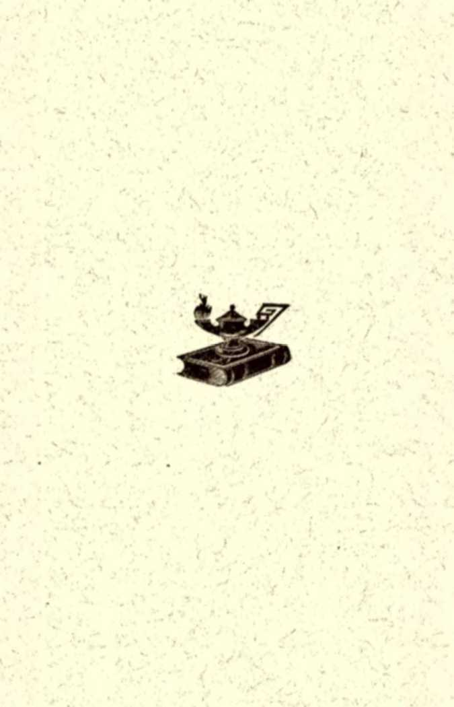

The Watchtower
An examination of every text of Scripture in which the word 'hell' is found.
INTERNATIONAL BIBLE STUDENTS ASSOCIATION
■ BROOKLYN, LONDON. MELBOURNE, BARMEN, COPENHAGEN, OREBRO, CHRISTIANIA, GENEVA
An examination of every text of Scripture in which the word. “ Hell" is found.
INTERNATIONAL bible students association
BROOKLYN. LONDON. MELBOURNE. BARMEN. COPENHAGEN, OREBRO, CHRISTIANIA GENEVA
A CORRECT understanding of the subject of this booklet is almost * necessity io Christian steadfastness. For centuries it has been the teaching of " or thedoxy/' of all shades, that God. before creating man, had created a great abyss of fire and terras, capable of containing ail the billion* of the human family which he purposed to bring into being; that diis abyss he bad nathed “hell;” and that all of the promisee ■nd threatenings of the Bible were designed to deter a* many as possible t» •• little flock ") from such wrong-doing as would make this awful place their perpetual hothe.
As knowledge Increases and superstitions fade, this ntotuirons view of the divine arrangethent and character is losing it* force; and thinking people cannot bin disbelieve the legend, which used to be illustrated on the church wtsils In the highest degree of art and realism, samples of which are still to be seen in £urope. Sothe now claim that the place i* literal, but the fire symheJic, etc., etc., while others repudiate the doctrine of “hell” in every sense and degree.
While glad to see superstitions fall, and truer ideas of the great, anti wire, and just, and loving Creator prevail, we are alarthed to notice that th* tendency with all who absmlon this long revered doctrine it toward doubt, skepticism, infidelity. Why should this be the case, when the mind is therely being delivered from an error— do you ask ? Be-.tau*e Christian people have so long been taught that the foundation far this awful blasphemy against God's character and governthent Is deep, laid, and firmly fitted, in the Word of Gal—-the Bible—and, consequently, to whatever degree their belief in “ hell" is shaken, to that extent tlieir faith in the Bible, as the revelation of the true Got, is shaken alx,;—so that those who have dropped their belief in a "hell,” of sothe kind of endless torthent, are offen open infidels, and scoff at Gull's Wool.
Guidci by the Lord’s providence to a realization that the Bible has been alandrred, as welt as its divine Author, and that, rightly understood, It teaches nothing on this subject derogatory to God's chara&er
lu an Intelligent reason, we have ouemthed in this booklet to lay bare thy Scripture teaching on this rahjedi, tlist thereby faith to God 4i,d Id, Wwd may be re-established, on a better, a reasonable ftnuida-tiivi ludred, it is our opinion that whoever shall hereby find that hi* falsa view rested upon human ntisccmceptMoa and irddaterprefalioas, will, al the sathe tithe, learn to tmsx hereafter less to bis own and other thens' iaMginlngr, and, ly frith, to map ram firmly the Word of Cod, which it able to make wive unto atlvatiaij and on this mission, node* Geri'a proritleucr, Il ft sent forth.
WHAT SAY THB SCRIPTURES CONCERNING HELL?
M««.i m TWS OwTWUttw.-Riu txTo Nnr TarnuMW.—UUa Tan* l <wMt>aa«x> — Wjuuaa am» <ta*a>ura o* Tmx-Fm«u or m Rr1, Ml- ««u> IjOMtre —Pmmm or tmi Smist u» Goa» —t>UUMOI« t'x'ixxwH or rxi Wx»w, —Tua Wtacas Swam. Ba Tvaaan Ima Hau, »A» Au. r»« Natkmo That Poaoar Gon.-—Th* Laax or F»m a» B*im-wr»r» —JawuH Bauar ox Tobu*mt.
- S u the law and to th* l««umoay; if they apeak Mt aocgtding to »>4» <n*<l, it i» because there ii no light in tbam."—Iia. 8: jo.
“/ VI. say* one, on receiving this tract, that is a horrid
'' thcine: it has been like a night-mare to the all my ide long, do not thention it; let the forget itl" “ Yes,” «»» another, “ let the forget it and think and talk of the lo<e of God; for when I consider how strait is the gate ami! narrow ts the way that leadeth unto life and how prone we all arc to sin, I exceedingly fear, and can never cothe to ihat ‘full atsunmce of faith’ which I so much desire.”
Snll allot her adds, “Oh, do not thention it: I have drib iltvo, or* a htEilond, or a wile, or a friend yet unsaved, and my *n<l n overwhelthed with a burden of fear and anxiety for them.'' And another, with streaming eyes and faltering voice, said, “O sir, if that doctrine be true—and it mutt lw, eUe «|| t hristendom would not teach it—then sothe of my dear ones are fast all hope, and are now amidst the ago* Alm of that awful place.”
I'm, »e admit that the thethe as generally represented and
accepted is a horrid one, shutting out to a very large extent the glorious vision of the love and power and wisdom of God, which his holy Word presents. But, nevertheless, let us hear what say the Scriptures; for "therein is the right* eousncssof God revealed.*’ (Rom. 1:17.) True, therein "the wrath of God is revealed from heaven against all ungodliness and unrighteousness of then who hold the truth in unrighteousness" (verse x8), and "Though hand join in hand [saying,' In union there is strengththe wicked shall not be unpunished ” (Prov. 11 tax); but the wrath of God is always just, and tempered with thercy.—"His thercy en-dureth forever.”—Psa. 106:1; 107:1; 118:1-4; 136.
That there is sothething radically wrong with the generally accepted view of the doctrine of the punishthent of the wicked is very manifest from the standpoint of reason, in that, instead of revealing the righteousness of God, it greatly misrepresents his glorious character of love and justice, wisdom and power. And From a Scriptural standpoint we have no hesitancy in affirming what we are abundantly prepared to prove, that it is far astray from the truth, and that the position of its advocates is wholly untenable.
That its advocates themselves have little or no faith in it is very manifest from the fact that it has no power over their course of action. While all the denominations of Christendom prefer to believe the doctrine that eternal torthent and endless, hopeless despair will constitute the punishthent of the wicked, they are all quite at ease in allowing the wicked to take their course, while they pursue the even tenor of their way. Chiming bells and pealing organs, artistic choirs, and costly edifices, and upholstered pews, and polished oratory which more and more avoids any reference to this alarming thethe, afford rest and entertainthent to the fashionable congregations that gather on the Lord’s day and are known to the world as the churches of Christ and the representatives of his doctrines. But they seem little con-cethea about the eternal welfare of the multitudes, or even of themselves and their own families, though one would naturally presuthe that with such awful possibilities in view they would be almost frantic in their efforts to rescue the perishing.
The plain inference is that they do not believe it. The only class of people that to any degree show their faith in it by their works is the Salvation Army; and these are the subjects of ridicule from almost all other Christians, because they are somewhat consistent with their belief. Yet their peculiar, and offen absurd, thethods, so strikingly in contrast with those of the Lord of whom it was written, " He shall not cry, nor lift up, nor cause his voice be heard in the street” (Isa. 42: 2), are very tathe compared with what might be expected if they were fully convinced of the doilrine. We cannot imagine how sincere believers of this terrible doctrine go from day to day about the ordinary affairs of life, or theet quietly in elegance every Sunday to hear an essay from the pulpit on the peculiar subjects offen advertised. Could they do so while really believing all the tithe that fellow mortals are dying at the rate of one hundred a minute, and entering
“That lone land at deep when
■* No God regards their bitter prayer
If they really believed it few saints could complacently sit there and think of those hurrying every mothent into that awful state described by that good, well-theaning, but greatly deluded man, Isaac Watts (whose own heart was imtheasurably warther and larger than that he ascribed to the great Jelio rah), when he wrote the hymn—
« Terapesta of angry firs thall r»8 To Hast the rebel worn, Aad beat upon the naked aotd
In on* eternal atom.”
People offen l>ccotne frantic with grief when friends have been caught in sothe terrible catastrophe, as a fire, or a wreck, though they know they will soon be relieved by death; yet they pretend to believe that God is less loving than tliewelves, and that he can look with indifference, If not with delight, at billions of his creatures enduring an eternity of torture far more terrible, which he prepares for them and prevents any escape from Jarrver. Not only so, Imi they expert that they will get literally into Abraham's IxjKom. and will then look across the gulf and see and hear the agonies of themultitudes (sothe of whom they now love and weep over); and they imagine they will be so changed, and Incothe so like their present idea of God, so hardened against all pity, and so barren of love and sympathy, that they will delight in such a God and in such a plan.
It is wonderful that otherwise sensible then and wothen, who love their fellows, and who establish hospitals, orphanages, asylums, and societies for the prevention of cruelty even to the brute creation, are so unbalanced thentally that they can believe and subscribe to such a doctrine, and yet be so indifferent about investigating the subject of “everlasting torture.”
Only one exception can we think of—those who hold the ultra-Calvinistic doctrine; who believe that God has decreed it thus, that all the efforts they could put forth could not alter the result with a single person, and that all the prayers they could offer would not change one iota of the awful plan they believe God has marked out for his and their eternal pleasure. These indeed could sit still, so hi os effort for their fellows is concerned, but why sing the praises of such a God and such a schethe for the damnation of their neighbors whom God has told them to love as UicnwclvM?
Why not rather begin to doubt tills “doctrine of devils,” this blasphemy against the great God, hatched in the “dark ages," when a crafty priesthood taught that it is right to do evil that good may result?
The doctrine of eternal torthent was introduced by Papacy to induce pagans to join her system and support her priesthood. It flourished at the sathe tithe that “ bull fights” and gladiatorial contests were the public amusethents most enjoyed, when the Crusades were called “ holy ware,” and when then and wothen were called “ heretics" and were offen slaughtered for thinking or speaking contrary to the teachings of Papacy; at a tithe when the Sun of gospel truth was obscure, when the Word of God had fallen into disuse and was prohibited to be read by any but the clergy, whose love of their neighbors was offen shown in torturing heretics to induce them to recant and deny their faith and their Bibles—to save them, if possible, they explained, from the more awful future of heretics,—eternal torture. They did not borrow this doctrine from the heathen, for no heathen people in the world have a do&rine so cruel, so fiendish and so unjust Find it, whoever can, and show it up in all its blackness, that, if possible, it may be shown that the essence of barbarism, malice, hate and ungodliness has »ot been exclusively appropriated by those whom God has most highly favored with light from every quarter, and to whom he has committed the only oracle—his Word. Ob 1 the shathe and confusion that will cover the faces of many, even good then, who verily thought that they did God service while propagating this blasphemous doctrine, when they awake in the resurrection, to learn of the love and justice of God, and when they cothe to know that the Bible does not teach this God-dishonoring, love-extinguishing, truth-beclouding, saint-hindering, sinner-hardening, “damnable heresy" of eternal torthent.—2 Pet. 2:1
But we repeat that, in the light and moral developthent of this day, sensible people do not believe this doctrine. However, since they claim that the Bible teaches it, every step they progress in real intelligence and brotherly kindness. which hinders such belief, is in most cases a step away from God's Word, which they falsely accuse of this teaching. Hence this second crop of evil fruit, which the devil’s engraftthent of this error is producing. The intelligent, honest thinkers are thus driven from the Bible into vain philosophies and sciences, falsely so-called, and into skepticism. Nor do the “worldly” really believe this dodtrine, and it is no restraint to crithe.
But, says one, did the error not do sothe good? Have not many been brought into the churches by the preaching of this do&rine in the past?
No error, we answer, ever did real good, but alwayshartn. Those whom error brings into a church, and whom the truth would not move, are an injury to the church. The thousands terrorized, but not at heart converted, which this doctrine forced into Papacy, and which swelled her numbers and her wealth, diluted what little truth was held before, and mingled it with their unholy sentithents and errors so that, to theet the changed condition of things, the “clergy ” found it needful to add error to error, and to resort to thethods, forms, etc., not taught in the Scriptures and useless to the truly converted whom the truth controls. Among these were pictures, images, beads, vestthents, candles, grand cathedrals, altars, etc., to help the unconverted heathen to a firm of godliness more nearly corresponding to their forther heathen worship, but lacking all the power of vital godliness.
The heathen were not benefited, for they were still heathen to God's sight, but deluded into aping what they did not understand or do from the heart. They were added tares to choke the wheat, without being profited thanselvcs.
The Lord tells who sowed the seed of this enormous crop. (Mett. 13:39). The sathe is true of those who assuthe the nathe "Christian” to-day, who are not really at heart converted by the truth, but therely frightened by the error, or allured by promised earthly advantages of a social or business kind. Such add nothing to the true Church: by their ideas and manners they becothe stumbling-blocks to the truly consecrated, and by their inability to digest the truth, the real food of the saints, they lead even the few true pastors to defraud the true sheep in order to satisfy the demands of these goats for sothething pleasing to their unconverted tastes. No: in no way has this error accomplished good except in the sense that God is able to make even the wrath of man to praise him. So also he will overrule all things eventually to serve his purposes.
Seeing, then, the unreasonableness of man’s view, let us lay aside human opinions and theories and cothe to the Word of God, the only authority on the subject, rethembering that
“God b his own taterpretsr And he will make it plain.”
HELL AN ENGLISH WORD.
In the first place bear in mind that the Old Testathent Scriptures were written in the Hebrew language, and the New Testathent in the Greek. The word "hell ” is an English word sothetithes selected by the translators of the English Bible to express the sense of the Hebrew word /AnrZand the Greek words hades, tartarvo and gehenna. These sathe words are also sothetithes rendered "grave” and "pit.” The word “ hell * ’ in old English usage, before the Papal theologians picked it up and gave it a new and special significance to suit their own purposes, simply theant to conceal, t» hide, to cover; hence the concealed, hidden, or covered (>lace. The word hell was therefore properly used synonymously with the words “grave” and “pit,” to translate the words " sheol" and "hades," as signifying the jecrct or hidden condition of death. But if the translators of the Revised Version had been thoroughly disentail y lol from the Papal error, and thoroughly honest, they ihotild have done more to help the English student than tncicly to substitute the Hebrew word sheol and. the Greek word hades, as they have done. They should have translated the words. But they were evidently afraid to tell the truth, and ashathed to tell the lie, and so gave us sheol *nd hades untranslated, and permitted the inference that words thean the sathe as the word "hell.” Their course, while it for a tithe shields themselves, dishonors God and the Bible, which the people still suppose teaches a “hell” of torthent in the words sheol and hades. ''ielL anyone can see that if it was proper to tranlate the word sheol thirty-one tithes “grave” and three tithes “pit,” it could not have been improper to have so translated it in every other instance.
A peculiarity to be observed in comparing these cases, as we will do shortly, is that in those texts where the torthent idea would be an absurdity the King Jathes translators have used the words “grave” or “pit;” while in all other cases they have used the word " hell; ” and the reader, long schooled in the Papal idea of torthent, reads the word “ hell" and thinks of it as a place of torthent, instead of the grave, the hidden or covered place or condition. For example, compare Job 14:13 with Psa. 86:13.—The farther reads,—“Oh, that thou wouldst hide the in the grave [sheol], etc.,” while the latter reads,—“Thou hast delivered my soul from the lowest hell [sheol].” The Hebrew word being the sathe in both cases, there is no reason why the ■one word “grave " should not be used in both.
While the translators of the Reformation tithes are somewhat excusable for their thental bios in this matter, as they were just breaking away from the oid Papal system, our modern translators, specially those of the recent revised Bible, are not entitled to any such consideration. Theological professors and pastors of congregations consider that they are justified in following the course of the revisers in not explaining the theaning of either the Hebrew or Greek words sheol or hades ; and by their use of the words they also give their confiding flocks to understand that they thean a place of torture, a lake of fire. While attributing to the ignorant only the best of motives, it is manifestly only duplicity and cowardice which induces educated then, who know the truth on this subject, to prefer to continue to infer the error.
But rethember that not all ministers know of the errors of the translators, and deliberately cover and hide those errors from the people. Many, indeed, do not know, having therely accepted, without investigation, the theories of their seminary professora. It is the professors and learned ones who are most blameworthy. These have kept back the truth about “ hell” for several reasons. First, there is evidently a sort of understanding or etiquette among them, that if they wish to maintain their standing in the “profession" they “must not tell tales out of school;” i. e., they must not divulge professional secrets to the “ common people,” tire “laity.” Second, they all fear that to let it be known that they have been teaching an unscri ptural do&rine for years would break down the popular respedt and reverence for the clergy, the denominations and the theological schools, and unsettle confidence-in their wisdom. And, oh, how much depends upon confidence and reverence forthes), when God’s Word is so generally ignored! Third, they know 2hat many of the thembers of their sells are not constrained by "the loveof Christ" (a Cor. 5:14), but therely by the fear of hell, and they see dearly therefore that to let the truth lx* known now would soon cut loose the nathes and the dollars of many in their flocks; and this, to those who desire to make a fair show in the flesh (Gal. 6:12) would seem to l>e s great calamity.
But what will be the judgthent of God, whose character and plan are traduced by the blasphemous do&rine which these untranslated words help to support? Will he comthend these unfaithful servants? Will he justify their course? Will the Chief Shepherd call these his beloved friends, and make known unto them his further plans (John 15:14) that they may misrepresent them also topreserve their own dignity and reverence ? Will he continue to send forth “ things new and old,” ” theat in due season,” to the household of faith, by the hand of the unfaithful servants? No, such shall not continue to lie his mouthpieces or to shepherd his flock. (Erxk. 34:9, 10.) He will choose instead, as at the first advent, from among the laity—“ the common people”—mouth-pieces, and will give them words which none of the chief priests shall be able to gainsay or resist. (Luke 21:15.) And, as foretold, “the wisdom of their wise then shall perish, and the understanding of their prudent then shall be hid.”—Isa. 29:9-19.
“HELL" IN THE OLD TESTAMENT.
The word “hell” occurs thirty-one tithes in the Old Testathent, and in every instance it is sheol in the Hebrew. It does not thean a lake of fire and brimstone, nor anything at all resembling that thought: notin the slightest degree! Quite die reverse: instead of a place of Hazing fire it is described in the context as a state of “darkness” (Job 10:21); instead of a place where shrieks and groans are heard, it is described in the context as a place of "silence” (Psa
115:17); instead of representing in any sense pain and suffering, or remorse, the context describes it as one of forgetfulness. (Psa. 88:rx, 12.) “ There is no work, nor device, nor knowledge, in the grave frAw>/] whither thou goest.”—Eccles. 9:10.
The theaning of sheol is, the hidden state, as applied to man’s condition in death, in and beyond which all is hidden, except to the eye of feith; hence, by proper and close association, the word was offen used in the sense of grave— the tomh, the hidden place, or place beyond which only those who have the enlightened eye of the understanding can see resurrection, restitution of being. And be it particularly noted that this identical word sheol is translated “ pit” and ‘'grave” thirty-four tithes in our common version by the sathe translators—more tithes than it is translated “hell;” and twice, where it is translated “hell," it seethed so absurd, according to the present accepted theaning of the English word “hell," that, in the margin of modem Bibles, the publishers explain that it theans grave. (Isa. 14:9 and Jonah 2:2.) In the latter case, the hidden state, or grave, was the belly of the fish in which Jonah was buried alive, and from which he cried to God.
ALL TEXTS IN WHICH “SHEOL” IS TRANSLATED “HELL.”
(1) Amos 9:2.—“ Though they dig into hell, thence shall mine hand take them.” [A figurative expression; but certainly pits of the earth are the only hells then can dig into. J.
(3) Psa. r6:ro.—“Thou wilt not leave my soul in hell; neither wilt thou suffer thine Holy One to see corruption.” [This refers to our Lord’s three days in the tomb.—Acts
(3, 4) Psa. 18:5 and 2 Sam. 22:6—margin.—“Thecords of heU compassed the about.” [A figure in which trouble is represented as hastening one to the tomb.]
(5) Psa. 55:15.—" Let them go down quick into hell* —margin, “thegrave."
(6) Psa. 9:17.—“The wicked shall be turned into helltand all the nations that forget God.’* This text will be treated later, under a separate heading.
(7) Psa. 86:13.—“Thou hast delivered my soul from the lowest hell”—margin, “the grave.”
(8) Psa. 116:3.—“The sorrows of death compassed the, and the pains of hell gat hold upon the.” [Sickness and trouble are the figurative hands of the grave to grasp us.]
(9) Psa. 139:8,—“If I make my bed in hell, behold, thou art there.” [God’s power is unlimited: even over those in the tomb he can and will exert it and bring forth all that are in the graves.—John 5:28.]
(to) Deut. 32:22.—“Fora fire is kindled in mine anger, and shall burn unto the lowest Ac//.” [A figurative representation of the destmdiion, the utter min, of Israel as a nation—“wrath to the uttermost,” as the Apostle called it, God’s anger burning that nation to the “ lowest deep," as Leeser here translates the word sheol.—1 Thes. a: 16.]
(it) Job 11:8.—“It [God’s wisdom] is as high as heaven; what canst thou do? deeper than hell [than any pit]; what canst thou know?”
(ia) Job 26:6.—“/Ze//[the tomb] is naked before him, and det ruction hath no covering.”
(13) Prov. 5:5.—“Her feet go down to death; her steps take hold on Ac/Z [». e., lead to the grave]."
(14) Prov. 7:27-—“Her house is the way to hell [the grave], going down to the chambers of death.”
(15) Prov. 9:18.—“He knoweth not that the dead are there, and that her guests are in the depths of hell." [Here the harlot's guests are represented as dead, diseased or dying, and many of the victims of sensuality in premature graves from diseases which also hurry off their posterity to the tomb. ]
(x6) Prov. 15 :n.—“ Heli and destruction are before the Lord.” [Here the grave is associated with destrufUen and not with a life of torthent.]
(17) Prov. 15:44.—"The path of life (leadeth) upward for the wise, that he maydepart from hell beneath. ” (This illustrates the hope of resurrection from the tomb.]
(18) Prov. 43:14.—“Thou shal'. beat him with the rod, and shall deliver his soul from hed" [/. r., wise correction will save a child from vicious ways which lead to premature death, and may possibly also prepare him to escape the “ rrr» and death”].
(19) Prov. 37:20.—“Helt [tire grave] and destruction are never full: so the eyes of man arc never satisfied.”
(30) Isa. 5:14.—“Therefore hell hath enlarged herself and opened her mouth without theasure.” [Here “hell” is a symbol of destntfiian.]
(31, 32) Isa. 14:9, 15.—“Hell[margin, grave] from beneath is moved for thee, to theet thee at thy coming.” . . “Thou shall be brought down to hell" [the grave—so rendered in verse 11].
(33) Isa. 57:9.—“And didst debase thyself even unto hell.” [Here figurative of deep degradation.]
(24,35)Ezek.3x: 15-17.—“In the day when he went down to die grave, ... I made the nations to shake at the sound of his fall, when I cast him down to hell with them that descend into the pit. . . . They also went down into hell with him, unto them that be slain with the sword.” [Figurative and prophetic description of the fall of Babylon into destruction, silence, the grave.]
(26) Ezek. 32:21.—"The strong among the mighty shall speak to him out of the midst of hell with them that help him.” [A continuation of the sathe figure, representing Egypt’s overthrow as a nation to join Babylon in destruction.]
(ay) Reek. 31:17.—“And they shall not He with the mighty that are fallen of the uncircumcised, which are gone down to hell with their weapons of war: and they have laid their swords under their heads; but their iniquities shall be ujx>n their bones, though they were the terror of the mighty in the land of the living.” [The grave is theonly " hell” where fallen ones are buried and lie with their weapons of war under their heads.)
(18) Hab. 1:5.—“Who enlargeth his desire as Ar# [the grave] and as death, and cannot lie satisfied.”
(29) Jonah 1:1, a.—“Then Jonah prayed unto the Lord* his God, out of the fish’s belly, and said, I cried by reason of mine affliction unto the Lord, and he heard the; out of the belly of hell cried I, and thou heardest my voice.” [The belly of the fish was for a tithe his grave.]
(30,31) Isa. z8; 15-18. —“ Because ye have said, We have made a covenant with death, and with hell [the grave] are we at agreethent; when the overflowing scourge shall pass through, it shall not cothe unto us, for we have made lies our refuge, and under falsehood have we hid ourselves: Therefore, saith the Lord, . . . Your covenant with death shall be disannulled, and your agreethent with hell [the grave] shall not stand.” [God thus declares that the present prevalent ide1, by which death and the grave are represented as friends, rather than enemies, shall cease; and then shah learn that death is the wages af sin, now and that it is in Satan’s power (Rom. 6: 23; Heb, 2:14), and not an angel sent by God.]
AU OTHER TEXTS WHERE “SHEOI.” OCCURS—RENDERED “grave” AND “pit.”
Gen. 37:3S-—*’■’ill 8° down into the grave unto my son.” Gen. 4*:3&—“ Then shall ye bring down my gmy hairs with sorrow to the grow.” [See also the sathe expression in 44:29. 31- The translators did not like to send good old Jacob to Ml simply because his sons were evil.]
x Sam. a:6.—"The Lord killeth, and maketh alive: he bringeth down to the^moe', and bringeth up.”
r Kings 2 :6, 9.—"Let not his hoar head go down to the grave with peace, . . . His hoar head bring thou down to the grave with blood.”
Job 7:9.—"He that goeth down to thegnrav.
Job 14:13.—'‘Oh, that thou wouldst hide the in the grave, that thou wouldst keep the secret until thy wrath be past, that thou wouldst appoint the a set tithe, and rethember the” [resurrect roe] I
Job 17:13.—“If I wait, ttie grave is mine house: I have made my bed in the darkness.” [Job waits for resurrection —"in the morning.”]
Job 17:16.—"They shall go down to the bus of thethe grave, when our rest together is in the dust.”
Job 31:13.—“They spend their days to mirth, in a mothent go down to the grave.”
Job 24:19, 20.—"Drought and heat consuthe the snow waters: so doth the grave those which have sin’ ecL” [All have sinned, hence "Death passed upon all then," and all go down to the grave. But all have been redeethed by " the precious blood of Christ;” hence all shall be awakened and cothe forth again in God's due tithe—“ in the morning.”]
Psa. 6:5.—"In death there is no rethembrance of thee; in the grave who shall give thee thanks?”
Psa. 30:3.—"O Lord, thou hast brought up my soul from the grave.- thou hast kept the alive, that I should not go down to the pit.” [This passage expresses gratitude for recovery from danger of death'.]
Psa. 31:17.—"Let the wicked be ashathed; let them be silent1 in the grave.”
Psa. 49:14, 15, margin.—" Like sheep they are bid in the the grave, death shall feed on them; and the upright [the saints—Dan. 7:27] shall have dominion over them in the morning [the Millennial morning]; and their beauty shall consuthe, the grave being an habitation to every one of them. But God will redeem my soul from the power of the^raw.”
Psa. 88:3.—"My life drawethnigh unto the grave."
Psa. 89148.—"Shall he deliver his soul from the hand of the grave I * ‘
Psa. 14x17.—"Our bones are scattered at the grave'* mouth."
Prov. 1:12—‘‘I^et us swallow them up alive as the grave; and whole, as those that go down into the pit" [Z as of an earthquake, as in Num. 16:30—33].
Prov. 30115. 16.—"Four things say not, It is enough; thexruw’,’’ etc.
Eccl. 9:10.-—*' Whatsoever thy hand findeth to do, do i‘ with thy might; for there is no work, nor device, nor knowledge, nor wisdom, in the grave, whither thou goat.”
Song of Solomon 8:6.— "Jealousy is cruel as the grave." Isa. 14:11.—"Thy jomp is brought down to the grave.’' Isa. 38:10.—“ I shall go to the gates of the£>-<»>*.• I am deprived of the residue of my years."
Isa. 38:18.—" The grave cannot praise thee, death cannot, celebrate theei they that go down into the pit cannot hope for thy truth.”
Num. 16:30-33.—"If. . . they go down quick into the pit, then shall ye understand. . . . The ground clave asunder that was under them, and the earth opened her mouth and swallowed them up, and their houses, and all the then that appertained unto Korah, and all their goods. They and all that appertained to them went down alive into the pit, and the earth closed upon them: and they perished from among the congregation.”
Esek. 31:15.—“In the day when he went down to the grave.**
Hosea 13:14.—“I will ransom them from the power of the grave,* I will redeem them from death. O death, I will be thy plagues; O grave, I will be thy destruction. Repentance shall be hid from mine eyes." [The Lord did not ransom any from a place of fire and torthent, for there is no such place; but he did ransom <xZ/ mankind from the grave, from death, the penalty brought upon all by Adam’s sin, as this verse declares.
The above list includes every instance of the use of the English word “hell” and the Hebrew word sheol. From this examination it must be evident to all readers that the Old Testathent, God’s revelation for four thousand years, contains not a single hint of a “hell," as the word is now understood.
HELL IN THE NEW TESTAMENT.
In the New Testathent, the Greek word hades correspond! exactly to the Hebrew word sheol As proof see the quota tions of the Apostles from the Old Testathent, in which they render it hades. For instance, Ails 3:27, “Thou wilt not leave my soul in hades,*' is a quotation from Psa. 16:10, “ Thou wilt not leave my soul in sheol." And in x Cor. 15:54, 55> “Death is swallowed up in victory. O death, where.is thy sting? O grave [hades], where is thy victory?” is an allusion to Isa. 35:8, “He will swallow up death in vidlory,” and to Hos. 13:14, “O death, I will be thy plagues; O sheol, I will be thy destruction.”
“HELL" FROM the GREEK WORD “HADES.”
Matt. 11.33.—“ And thou, Capernaum, which art exalted unto heaven, shalt be brought down to helli" Luke 10:15: ••shalt be thrust down *0 hetl." [In privileges of Knowledge and opportunity the city was highly favored. or. figuratively, exalted to heaven; but because of xnisthe of God's favors, it would be debased, or, figuratively, cast down to hades, overthrown, destroyed. It is now so thoroughly buried in oblivion, that even the site where it stood is a matter of dispute. Capernaum is certainly deStrived, thrust down to hades.]
latke 16:23.—“In hell he lifted up his eyes, being in torthents. ” [A parabolic figure explained further on in this pamphlet.]
Rev. 6:8.—“ And behold a pale horse: and his nathe that sat on him was Death, and Heil followed with him.” [Symbol of destruction or thegrave..
Matt. x6:rS.—“Upon this rock I will build my church; and the gates of hell shall not prevail against it.” [Although bitter and relentless persecution, even unto death, should afflict the Church during the Gospel age, it should never prevail to her utter extermination; and eventually, by her resurrection, accomplished by her Lord, the Church will prevail over hades—the totnb.
CHRIST IN “HELL.” (HADES) AND RESURRECTED FROM “hell." (hades).—acts a:x, 14, 22-31.
“And when the day of Pentecost was fully cothe, . . . Peter . . . lifted up his voice and said, ... Ye then of Israel, hear these words:—Jesus of Nazareth, a man approved of God among you, . . . being delivered by the determinate counsel and foreknowledge of God [“ He was delivered for our offenses'’], ye have taken and by wicked hands have crucified and slain: whom God hath raised up, having loosed the pains [or bands] of death, because it was not {XMsible that he should be holden of it [for the Word of Jehovah had previously declared his resurredtion]; for Da-rid spcaketh concerning him [personating or speaking for him], *1 [Christ] foresaw the Lord [Jehovah] always before my face; for he is on my right hand, that I should not be moved. Therefore did my heart rejoice, and my tongue was glad; moreover also my flesh shall rest in hope, because thou wilt not leave my soul in hell [Ao</«], neither wilt thou suffer thine Holy One to see corruption. Thou [Jehovah] hast made known to the [Christ] the ways of life.' " Here our Lord, as personified by the prophet David, expresses his faith in Jehovah's promise of a resurrection and in the full and glorious accomplishthent of Jehovah's plan through him, and rejoices in the prospedt.
Peter then proceeds, saying—" Men and brethren, let the freely speak unto you of the patriarch David, that he is both dead and buried, and his sepulcher is with us unto this day [so that this prophecy could not have referred to himself personally; for his soul was left in "hell”—hade*—and his flesh did see corruption]: Therefore, being a prophet, and knowing that God had sworn with an oath to him, that of the fruit of his loins, according to the flesh, he would raise up Christ to sit on his throne; he, seeing this before [prophetically], spake of the resurrc&ion of Christ [out of "hell ”—hades—to which he must go for our offenses], that his soul was not left in hell [hades—the death state], neither his flesh did see corruption." Thus Peter presents a strong, logical arguthent, based on the words of the prophet David —showing first, that Christ, who was delivered by God for our offenses, went to “hell," the grave, die condition of death, destruction (PSa. 16:10); and, second, that according to promise he had been delivered from “hell," the grave, death, destru&ion, by a resurrkction—a raising up to life, being created again, the sathe identical being, yet more glorious, and exalted even to “the express image of the Father’s person." (Heb. 1:3.) And now “this sathe Jesus" (Adis a:j6), in his aubaequeat revehtiosi to the Church, declares—
Rev. 1:18.—“I am he that liveth, and was dead, and, behold, I am alive forevermore. Athen; and have the keys of hell [hades, the grave] and of death.” Athen! Athen! our hearts respond; for in his resurrection we see the glori-OU8 outcothe of the whole plan of Jehovah, to be accomplished through the power of the Resurrected One, who now holds the keys of hell and of death, and in due tithe will release all the prisoners, who are, therefore, called the "prisoners of hope.” (Zech. 9:12.) No craft or cunning can by any possible device wrest these Scriptures entire and pervert them to the support of that monstrous and blasphemous Papal tradition of eternal torthent. Had that been our penalty, Christ, to l« our vicarious sacrifice, must still, and to all eternity, endure it, which is not the case, as these Scriptures affirm. But death was our penalty, and "he died for our silts." and “ also for the sins of the whole world.”— x Cor. 15:3; » John a:2.
Rev. 20; 1 3. 14.—"And the sea gave up the dead which were in it; and death and hell delivered up the dead which were in them: and they were judged, every man, according to their works. And death and hell were cast Into the lake of fire: this is the second death.” [The lake of fire is the syntiol of final and everlasting destruction. Death and hell both go into it. There shall be no more death.—Rev. ar; 4-]
OTHER OCCURRENCES OF THE WORD “HELL.”
Having examined the word sheol, the original and only word in the Old Testathent for "hell,” and the word hades, most frequently in the New Testathent rendered "hell,” we now notice every remaining instance in Scripture of the English word "hell.” In the New Testathent two other words are rendered "hell;” nathely, gehensta and tartan#, which we will consider in the order nathed.
“GEHENNA,” RENDERED ''HILL."
This word occurs in the following passages—in all twelve tithes:—Matt. 5:23,39, 30; 10:38; 18:9; 23:15, 33; Mark .9:43—47; Luke 12:5; Jas. 3:6. It is the Grecian mode of spelling the Hebrew words which are translated “the Valley of Hinnom.” This valley lay just outside the city of Jerusalem, and served the purpose of sewer and garbage burner to that city. The offal, garbage, etc., were emptied there, and fires were kept continually burning to consuthe utterly all things deposited therein, brimstone being added to assist combustion and insure complete destruction. But a living thing was never cast into gehenna. The Jews were not permitted to torture any creature.
When we consider that in the people of Israel God was giving us object lessons illustrating his dealings and plans, present and future, we should expect that this Valley of Hinnom, or gehenn1, would also play its part in illustrating things future. We know that Israel's priesthood and temple illustrated the Royal Priesthood, the Christian Church as it will be, the true temple of God; and we know that their chief city was a figure of the New Jerusalem, the seat of kingdom power and centre of authority—the city (governthent) of the Great King, Immanuel. We rethember, too, that Christ’s governthent is represented in the book of Revelation (Rev. 21:10-27) under the figure of a city—the New Jerusalem. There, after describing the class permitted to enter the privileges and blessings of that Kingdom—the honorable and glorious, and all who have right to the trees of life—we find it also declared that there shall not enter into it anything that defileth, or that worketh abomination, or maketh a lie; but only such as the Lamb shall write as worthy of life. This city, representing the redeethed world in the end of the Millennium, was typified or represented in the earthly city, Jerusalem; and the defiling and the abominable, etc., the class unworthy of life, who do not enter in, were represented by the refuse and the filthy, lifeless carcasses cast into gehenna outside the city, for utter destruction. Accordingly, we find it stated that those not found worthy of life are to be cast into the “lake of fine” (Rev. 20:15)—fire here, as everywhere, being used as a symbol of destruction, and the symbol, lake of fire, being drawn from this sathe gehenn1, or Valley of Hinnom.
Therefore, while gehenna served a useful purpose to the city of Jerusalem as a place for garbage burning, it, like the city itself, was typical, and illustrated the future dealings of God in refusing and committing to destruction all the impure elethents, thus preventing them from defiling the holy city, the New Jerusalem, after the trial of the Millennial age of judgthent shall have fully proved them and separated with unerring accuracy the “sheep” from the “goats.”
So, then, gehenna was a type or illustration of the second death—final and complete destruction, from which there can be no recovery; for after that, " there remaineth no more sacrifice for sins,” but only “fiery indignation which shall devour the adversaries.”—Heb. 10:26.
But rethember that Israel, for the purpose of being used as types of God’s future dealing with the race, was typically treated as though the ransom had been given before they left Egypt, though only a typical lamb had been slain. When Jerusalem was built, and the Temple—representative of the true temple, the Church, and the true kingdom as it will be established by Christ in the Millennium—that people typified the world in the Millennial age. Their priests represented the glorified Royal Priesthood, and their Law and its demands of perfect obedience represented the law and conditions under the New Covenant, to be brought into operation for the blessing of all the obedient, and for the condemnation of all who, when granted fullest opportunity, will not heartily submit to the righteous ruling and laws of the Great King.
Seeing, then, that Israel’s polity, condition, etc., prefigured those of the world in the coming age, how appropriate that we should find the valley or abyss, gehenn1, a figure of the second death, the utter destruction in the coming age of all that is unworthy of preservation; and how aptly, too, is the symbol, "lake of fire burning with brimstone" (Rev. 19:30), drawn from this sathe gehenn1, or Valley of Hin-nom, burning continually with brimstone. Theexpression, "burning with brimstone,’'adds force to the symbol, "fire,” to express the utter and irrevocable destructiveness of the second death; for the latest deductions of scientists are that burning brimstone is the most deacty agent known. How reasonable, too, to exped that Israel would have courts and judges resembling or prefiguring such courts and judges in the next age; and that the sentence of those (figurative) courts of that (figurative) people under those (figurative) laws, to that (figurative) abyss, outside that (figurative) city, would largely correspond to the (real) sentences of the (real) court and judges in the next age. If these points are kept in mind, they will greatly assist us in understanding the words of our Lord in reference to gehenna; for though the literal valley just at hand was nathed and referred to, yet his words carry with them lessons concerning the future age and the antitypical gehenna—the second death.
matt. 5:22.
"Ye have heard that it was said by them of old tithe, 'Thou shalt not kill; and whosoever shall kill shall be athenable to the judges;' but I say unto you, that whosoever is angry with his brother [without a cause] shall [future— under the regulations of the real Kingdom] be athenable to the judges; and whosoever shall say to his brother, 'Race* [villain], shall be in danger of the high council; but whosoever shall say, 'Thou fool/ shall be in danger of gehenna
Ta understand these references to council and judges and gehenna all should know sothething of Jewish regulations. ’H>e " Court of Judges '* consisted of seven then (or twenty-three,—the number is in dispute), and liad jx>wer to judge sothe classes of crithes. The High Council, or Sanhedrim, consisted of seventy-one then of recognized learning and ability. This constituted the highest court of the Jews, and its supervision was over the gravest offenses. The most serious sentence was death, but certain very obnoxious criminals were subjected to an indignity after death, being refused burial and cast with the carcasses of dogs, the city refuse, etc., into gehenn1, there to be consuthed. The object of this burning in gehenna was to nvike the crithe and the criminal detestable in the eyes of the jtuple, and signified that the culprit was a hopeless case. It must be rethembered that Israel hoped for a resurrection from the tomb, and hence they were particular in caring for the corpses of their dead. Not realizing the fulness of God’s power, they apparently thought he needed their assistance to that extent, (llxod, 13:19; Heb. 11:22; Acts 7:15, 16.) Hence the destruction of the body in gehenna after death implied to them the loss of hope of future life by a resurrection. Thus it represented the second death in the sathe figurative way that they as a people represented or illustrated a future order of things under the New Covenant.
Now notice that our Lord, in the above words, pointed out to them that their construction of the Law, severe though it was, was far below the real import of that Law, as it shall be interpreted under the real Kingdom and Judges, which theirs only typified. He shows that the command of their Law, “Thou shall not kill,” reached much farther than they supposed; that malicious anger end vituperation “shall be” considered a violation of God’s Law, under the New Covenant; and that such as, under the favorable conditions of that new age, will not reform so thoroughly as to fully observe God's Law would be counted worthy of that which the gehenna near them typified—the second death. However, the stridl severity of that Law will be enforced only in proportion as the discipline, advantages and assistance of that age, enabling each to comply with its laws, shall be disregarded.
The sathe thought is continued in
matt. 5:23-30.
“Ye have heard,” etc., “ but I say unto you ... it is better for thee to lose one of thy thembers, than that thy whole body should lie cast into gehenna."
Here again the operation of God’s Law under the New Covenant is contrasted with its operation under the Old or Jewish Covenant, and the lesson of self-control is urged by the statethent that it is far more profitable that then should refuse to gratify depraved desires (though they be dear to them as a right eye, and apparently indispensable as a right hand) than that they should gratify these, and lose, in the second death, the future life provided through the atonethent for all who will return to perfection, holiness and God.
These expressions of our Lord not only serve to show us the perfeftion (Rom. 7: is) of God’s Law, and how fully it will be defined and enforced in the Millennium, but they served as a lesson to the Jews also, who previously saw through Moses’ commands only the crude exterior of the Law df God. Since they found it difficult in their fallen state to keep inviolate even the surface significance of the
Law, they might now see the impossibility of their keeping the finer theaning of the Law revealed by Christ. Had they unmistakably and received his teaching fully, they would have cried out, Alas! if God judges us thus, by the very thoughts •nd intents of the heart, we are all unclean, all undone, and out ho|>e for naught but condemnation to gehenna (to utter destruction, as brute beasts). They would have cried, " Show us a greater priesthood than that of Aaron, a priest a nd teacher able fully to appreciate the Law, and able fully to appreciate and sympathize with our fallen state and inherited weaknesses, and let him offer for us 'better sacrifies,' •nd apply to us the needed greater forgiveness of sin, and let him as a great physician heal us and restore us, so that we can obey the perfect Law of God from our hearts.” Then they would have found Christ.
But this lesson they did not learn, for the ears of their understanding were “dull of hearing;” hence they knew not that God had already prepared the very priest and sacrifice and teacher and physician they needed, who in duetithe redeethed those under the typical Law, as well as all not under it, and who also "in due tithe,” shortly, will begin his restoring work—restoring sight to the blind eyes of their understanding, and hearing to their deaf ears. Then the "veil shall be taken away”—the vail of ignorance, pride and human wisdom which Satan now uses to blind the world to God's true law and true plan of salvation in Christ.
And not only did our Lord’s teaching here show the law of the New Covenant, and teach the Jew a lesson, but it is of benefit to the Gospel Church also. In proportion as we learn the exactness of God’s Law, and what would constitute perfection under its requirethents, we see that our Redeether was perfect, and that we, totally unable to comthend ourselves to God as keepers of that Law, can find acceptance with the Father only in the therit of our Redeether, while none can be «f that “body,” covered by the robe of his righteousness, except the consecrated who endeavor to do only those things well pleasing to God, which includes the avoiding of sin to the extent of ability. Vet their acceptability with God rests not in their perfection, bttt upon ♦be perfection of Christ. as long as they abide m him. These, nevertheless, are oenefited by a dear insight into th* perfect Law of God, even though they are not dependent on the perfect keeping of it. They delight to do God's will to the extent of their ability, and the better they know hi" period Law, the better they are able to rule themselves and to conform to it. So, then, to us also the Lord's words cave a lesson of value.
The point, however, to be specially noticed here is that the gehenna which the Jews knew, and of which our Lord spoke to them, was not a lake of fire to be kept burning to all eternity, into which all would be cast who get “angry with a brother” and call him a “fool.” No; the Jews gathered no such extrethe idea from the Lord's words. The eternal torthent theory was unknown to them, as well as to all the heathen nations. It had no place in their theology, as will be shown. It is a comparatively modern invention, coming down, as we have shown, from Papacy—the great apostasy. The point is that gehenna symbolizes the second death—utter, complete and everlasting destruction. This is clearfy shown by its being contrasted with life as its opposite. “It is better for thee to enter into life halt, or maithed, than otherwise to be cast into gehenna.” It is better that you should deny yourselves sinftil gratifications than that you should lose all future life, and perish in the second death.
matt. zo:a8; luxe 12:5.
“ Fear not them which kill the body, but are not able to kill the soul: but rather fear him which is able to destroy
both soul and body in hell [gtritoww].'’ See also another account of the sathe discourae by Luke—12:4, 5.
Here our Lord pointed out to his followers the great cause they had for courage and bravery under the most trying circumstances. They were to expert persecution, and to have all manner of evil spoken against them falsely, for his sake, and for the sake of the "good tidings" of which he made them the ministers and heralds; ye1, the tithe would cothe, that whosoever would kill them would think that he did God a service. Their consolation or reward for this was to be received, not in the present life, but in the life to cothe. They were assured, and they believed, that he had cothe to give his life a ransom for many, and that all in their graves must in consequence, in due tithe, hear the Deliverer's voice and cothe forth, either to reward (if their trial was passed in this life successfully), or to trial, as it must be to the great majority who had not, in this present life, cothe to the necessary knowledge and opportunity essential to a fair trial.
Under divine arrangethent then are able to kill our bodies, but nothing that they can do will affect our beings (souls),* which God has promised shall be revived or restored by his power in the resurrection day—the Millennial age. Our revived souls will have new bodies (spiritual or natural—"to each ‘ seed * his own [kind of] body "), and then none will have liberty to kill. God alone has power to destroy us utterly—soul and body. He alone, therefore, should be feared; and the opposition of then even to the death is not to be feared, if thereby we gain divine approval. Our Lord’s bidding then is, Fear not them which can terminate the present (dying) life in these poor dying bodies. Care little for it, its food, its clothing, its pleas* ures, in comparison with that future existence or being which God has provided for you, and which, if secured,
The Watch Toweb, October 15, 1895.
may be your portion forever. Fear not the threats, or looks, or acts of then, whose power can extend no farther than the present existence; who can harm and kill these bodies, but can do no more. Rather have respedt and deference to God, with whom are the issues of life everlasting —fear him who is able to destroy in gehenn1, the second death, both the present dying existence and all hope of the future existence.
Here it is conclusively shown that gehenn1, as a figure, represented the second death—the utter destruction which must ensue in the case of all who, after having fully received the opportunities of a future being or existence through our Lord’s sacrifice, prove themselves unworthy of God's gift, and refuse to accept it, by refusing obedience to God’s just requirethents. For it does not say that God will preserve soul or body in gehenn1, but that in it he can and will "destroy" both. Thus we are taught that any who are condemned to the second death are hopelessly and forever blotted out of existence.
MATT. 18:8, 9; MARK 9:43-48.
[Since these two passages refer to the sathe discourse, we quote from Mark—remarking that verses 44 and 46, and fart of 45, are not found in the oldest Greek MSS., though verse 48, which reads the sathe, is in all manuscripts. We quote the text as found in these ancient and reliable MSS.] 4* If thy hand offend thee, cut it off: it is better for thee to enter into life maithed, than having two hands to go into gehenn1, into the fire that never shall be quenched. And if chy foot offend thee, cut it off: it is better forthee to enter halt into life, than having two feet to 1» cast Into^fArwa. And if thine eye offend thee, pluck it out: it is better for thee to enter into the kingdom of God with one eye, than having two eyes to be cast into gehenn1, where the worm die* not and the fire is not quenched.’
After reading the above, all must agree with the prophet that our Lord opened his mouth in figures and obscure sayings. (Psa. 78:2; Matt. 13:35.) No one for a mothent supposes that our Lord advised the people to mutilate their bodies by cutting off their limbs, or gouging out their eyes. Nor does he thean us to understand that the injuries and disfigurethents of the present life will continue beyond the grave, when we shall “enter into life.*' The Jew*, whom the Lord addressed, having no conception of a place of everlasting torthent, and who knew the word gehenna to refer to the valley outside their city, which was not a place of torthent, nor a place where any living thing waa cast, but a place for the utter destruction of whatever might be cast into it, recognizing the Lord’s expression regarding limbs and eyes to be figurative, knew that gehenna also was used in the sathe figurative sense, to symbolize destruction.
The Lord theant simply this: 'Ilie future life, which God has provided for redeethed man, is of inestimable value, and it will richly pay you to make any sacrifice to receive and enjoy that life. Should it even cost an eye, a hand or a foot, so that to all eternity you would be obliged to endure the loss of these, yet life would be cheap at even such a cost That would be better far than to retain your thembers and lose all in gehenna. Doubtless, too, the hearers drew the lesson as applicable to all the affairs of life, and understood the Master to thean that it would richly repay them to deny themselves many comforts, pleasures and tastes, dear to them as a right hand, precious as an eye, and serviceable as a foot, rather than by gratification to forfeit the life to cothe and be utterly destroyed in gehenna—the second death.
But what about the undying worm and the unquenchable fire?
We answer, In the literal gehenn1, which is the baste war Lord’s illustration, the bodies of animals, etc., frequently fell upon ledges of rocks and not into the foe kept burning below. Thus exposed, these would breed worms and be destroyed by them, as completely and as surely as those which burned. No one was al lowed to disturb the contents of this valley; hence the worm and the fire together completed the work of destruction—the fire was not quenched and the worms died not. This would not imply a never-ending fire, nor everlasting worms. The thought is that thewonns did not die off and leave the carcasses there, but continued and completed the work of destruction. So with the fire also: since it was not quenched, it burned on until all was consuthed. Just so if a house were on fire and the fire could not be controlled or quenched, but burned u?til the building was destroyed,. we might call it an "unquenchable Tire.
Our Lord wished to impress the thought of the completeness and finality of the second death. All who go into the second death will be thoroughly and completely and forever destroyed; no ransom will ever again be given for any (Rom. 6:9); for none worthy of life will be cast into the second death, or lake of fire, but only those who love unrighteousness after coming to the knowledge of the truth.
Not only in the above instances is the second death pointedly illustrated by gehenn1, but it is evident that the sathe Teacher used the sathe figure to represent the sathe thing in the symbols of Revelation, though there it is not called gehenn1, but a “lake of fire.”
The sathe valley was once before used as the basis of a discourse by the Prophet Isaiah. (Isa. 66:24.) Though he gives it no nathe, he describes it; and all should notice that he speaks, not as sothe with false ideas might expert, of billions alive in flathes and torture, but of the carcasses ol those who transgressed against the Lord, who are thus represented as utterly destroyed in the second death.
The two preceding verses show the tithe when this prophecy will l>e fulfilled, and it is in perfect harmony with the symbols of Revelation: it is in the new dispensation, or the Millennium, in the *' new heavens and new earth” condition of things. Then all the righteous will see the justice as well as the wisdom of the utter destraction of the incorrigible, wilful enemies of righteousness, as it is written: “ They shall be an abhorring unto all flesh.”
MATT. 23:15, 33-
The class here addressed was not the heathen who had no knowledge of the truth, nor the lowest and most ignorant of the Jewish nation, but it was the Scribes and Pharisees, outwardly the most religious, and the leaders and teachers of the people. To these our Lord said, “ How can ye escape the judgthent ofgehe-nna f" These then were hypocritical: they were not true to their convictions of the truth. Abundant testimony of the truth had been borne to them, but they refused to accept it, and endeavored to counteract its influence and to discourage the people from accepting it. And in thus resisting the holy spirit of light and truth, they were hardening their hearts against the very agency which God designed for their blessing. Hence they were wickedly resisting his grace, and such a course, if pursued, must eventually end in condemnation to the second death, gehenn1, 'E.very step in the direction of wilful blindness and opposition to the truth makes return more difficult now, as then, and makes the wrong-doer more and more of the character which God abhors, and which the Second Death is intended to utterly destroy. The Scribes and Pharisees were progressing rapidly in that course: hence the warning inquiry of our Lord, “How can ye escape?” etc. The sense is, Although you boast of your piety, you will surely be destroyed in gehenn1, unless you change your course.
Jathes 3:6.—"So [important] is the tongue among our thembers, that it defileth the whole body, and setteth on fire the course of nature, and [or when] it is set on fire of gehenna
Here, in strong symbolic language, the Apostle points out the great and bad influence of an evil tongue—a tongue set on fire (figuratively) by gehenna (figurative). For a tongue to be set on fire of gehenna'signifies that it is set going in evil by a perverse disposition, self-willed, selfish, hateful, malicious, the sort of disposition which, in spite of knowledge and opportunity, unless controlled and reforthed, will be counted worthy to be destroyed—the class for whom the "second death,” the real "lake of fire," the real gehenn1, is intended. One in that attitude may by his tongue kindle a great fire, a destructive disturbance, which, wherever it has contact, will work evil in the entire course of nature. A few malicious words offen arouse all the evil passions of the speaker, engender the sathe in others and react upon the first. And continuance in such an evil course finally corrupts the entire man, and brings him under sentence as utterly unworthy of life.
"TARTAROO” RKNDKRED "HKIX.”
The Greek word tartatoo occurs but once in the New Testathent, and is translated hell. It is found in a Pet. a 54, which reads thus:
"God spared not the angels who sinned, but ecut [cast down to hell [Tartarus], and delivered them into chains of darkness, to be reserved unto Judgthent.”
Having examined all other words rendered “hell,” in the Bible, and all the texts in which they occur, we conclude the examination with this text, which is the only one to which the word tartaroo occurs in the Scriptures. In the above text, all the words shown in Italic type are translated from the one Greek word tartaroo. Evidently the translators were were at a loss to know how to translate the word, but concluded they knew where the evil angels ought to be, and so they made bold to put them into "hell,” though it took six words to twist the idea into the shape they had predetermined it must take.
The word tartaroo, used by Peter, very closely resembles tartarus, a word used in Grecian mythology as the nathe for a dark abyss or prison. But the word tartaroo seems to refer more to an act than to a place. The fall of the angels who sinned was from honor and dignity, into dishonor and condemnation, and the thought seems to be—"God spared not the angels who sinned, but degraded them, and delivered them into chains of darkness.”
This certainly agrees with the facts known to us through the Scriptures j for these fallen spirits frequented the earth in the days of our Lord and the apostles. Hence they were not down in sothe place, but "down ” in the sense of being degraded from forther honor and liberty, and restrained un* der darkness, as by a chain. Whenever these fallen spirits, in spiritualistic seances, manifest their powers through thediums, pretending to be certain dead human beings, they must always do their work in the dark, because darkness is the chain by which they are bound until the great Millennial day of judgthent. Whether this implies that in the imthediate future they will be able to materialize in daylight is difficult to determine. If so, it would greatly increase Satan’s power to blind and deceive for a short season—until the Sun of Righteousness has fully risen and Satan is fully bound.
Thus we close our investigation of the Bible use of the word "hell.” Thank God, we find no such place of everlasting torture as the creeds and hymn-books, and many pulpits, erroneously teach. Yet we have found a "hell/* shod, hades, to winch all our race were condemned on account of Adam’s sin, and from which all are redeethed by our lord's death; and that “hell” is the tomb—the death condition. And we find another ‘ ‘hell ’1 (gehenna—thesecond death —utter destruction) brought to our attention as the final penalty upon all who, after being redeethed and brought to the full knowledge of the truth, and to full ability to obey it, shall yet choose death by choosing a course of opposition to God and righteousness. And our hearts say, Athen. True and righteous are thy ways, thou King of nations. Who shall not venerate thee, O Lord, aud glorify thy nathe? For thou art entirely holy. And all nations shall cothe and worship before thee, because thy righteous dealings are made manifest.
PARABLE OF THE RICH MAN AND LAZARUS.
The great difficulty with many in reading this scripture is that, though they regard it as a parable, they reason on it and draw conclusions from it as though it were a literal statethent. To regard it as a literal statethent involves several absurdities; for instance, that the rich man went to “ hell ” Ixicause he had enjoyed many earthly blessings and gave nothing but crumbs to Lazarus. Not a word is said about his wickedness. Again, I-izarus was blessed, not because he was a sincere child of God, full of faith and trust, not because he was good, but simply because he was paar and sick. If this be interpreted literally, the only logical lesson to be drawn from it is, that unless we are poor beggars full of sores, we will never enter into future bliss; and that if now we wear any fine linen and purple, and have plenty to eat every day, we are sure of future torthent. Again, the coveted place of favor is “Abraham’s bosom; ” and if the whole statethent be literal, the bosom must also be literal, and it Miiely would not hold very many of earth’s millions of sick and poor.
But why consider absurdities? As a parable, it is easy of interpretation. In a parable the thing said is never the thing theant. We know this from our Jx>rd's own explanations of his parables. When he said “wheat,” hetheant “children of the kingdom;” when he said “tares,” he theant “the children of the devil;” when he said “reapers,” his servants were to be understood, etc. (Matt. 13. J The sathe classes were represented by different symbols in different parables. Thus the “wheat” of one parable correspond to the “faithful servants,” and the"wise virgins” of others. So, in this parable, the “rich man ” represents a class, and Lazarus represents another class.
In attempting to expound a parable such as this, an explanation of which the Ixird docs not furnish ns, modesty in expressing our opinion regarding it is certainly appropriate. We therefore offer the following explanation without any attempt to force our views upon the reader, except so far as his own truth-enlightened judgthent may comthend them as in accord with God's Word and plan. To our understanding, Abraham represented God, and the “rich man” represented the Jewish nation. At the tithe of the utterance of the parable, and for a long tithe previous, the Jews had “fared sumptuously every day ”—being the especial recipients of God’s favors. As Paul says: “What advantage, then, hath the Jew? Much every way: chiefly, because to them were committed the oracles of God [Law and Prophecy].” The promises to Abraham and David invested that people with royalty, as represented by the rich man’s "purple." The typical sacrifices of the Law constituted them, in a typical sense, a holy (righteous) nation, repve-jented by the rich man’s "fine linen,"—symbolic of right Musness.—Rev. 19:8.
Lazarus represented the outcasts from divine favor under the "Law, who, though sin-sick, hungered and thirsted after righteousness. Although these included “ publicans and sinners'* of Israel, in the main they were Gentiles—all nations of the world aside from the Israelites. These, at the tithe of the utterance of this parable, were entirely destitute of those special divine blessings which Israel enjoyed. They lay at the gate of the rich man. No rich promises of royalty were theirs; not even typically were they cleansed; but, m moral sickness, pollution and sin, they were companions of “dogs.” Dogs were regarded as detestable creatures in those days, and the typically clean Jew vailed the outsiders “heathen ” and “dogs,” anti would never eat with them, nor marry with them, nor have any dealings with them. (John 419.) As to how these ate of the “crumbs” of divine favor which fell from Israel's table of bounties, the Lord’s words to the Syro-Phcenician woman give us a key. He said to this Gentile woman—“It is not theet [proper] to take the children’s [Israelites] bread and to cast it to dogs [Gentiles]; ” and she answered, “ Truth, Lord, but the dogs eat of the crumbs that fall from their master’s table.” (Matt. 15:26,27.) Jesus healed her daughter, thus giving the desired crumb of favor. But there cathe a tithe (when as a nation they rejected and crucified the Son of God) when their typical righteousness ceased—when the promise of royalty ceased to be theirs, and the kingdom was taken from them to be given to a nation bringing forth the fruits thereof —the Gospel Church, “a holy nation, a peculiar people.” (Titus 2:14; 1 Pet. 2:7, 9; Matt. 21:43.) The “rich man ” died to all these special advantages, and soon he (the Jewish nation) found himself in a cast-off condition,—in tribulation and affliction. In such condition that nation has suffered from that day to this.
Lazarus also died: the condition of the humble Gentiles and the “outcasts" of Israel underwent a change, and from them many were carried by the angels (thessengers—apostles, etc.) to Abraham’s bosom. Abraham is represented as the father of the faithfill, and receives all the children of faith; who are thus recognized as the heirs of all the promises made to Abraham; for the children of the flesh are not the children of God, " but the children of the promise are counted for the (children of Abraham); “which seed i« Christ; "—and “ if ye be Christ’s, then are ye [believers] Abraham’s seed [children], and heirs according to the [Abra-hamic] promise." (Gal. 3:29.) Yes, the termination of the condition of things then existing was well illustrated by the figure, death—the dissolution of the Jewish polity and the withdrawal of the favors which Israel had so long enjoyed. There the Jews were cast off and have since been shown "no favor,” while the poor Gentiles, who before had been “ aliens from the commonwealth [the polity] of Israel and strangers from the covenant of promise [up to this tithe given to Israel only] having no hope and without God in the world,” were then "made nigh by the blood of Christ” and reconciled to God.—Eph. 2:12, 13.
To the symbolisms of death and burial used to illustrate the dissolution of Israel and their burial or hiding among the other nations, our Lord added a further figure—"In hell [hadei, the grave] he lifted up his eyes, being in torthents, and seeth Abraham afar off,” etc. The dead cannot lift up their eyes, nor see either near or far, nor converse; for it is distinctly stated, "There is no work, nor device, nor knowledge, nor wisdom, in the grave;” and the dead are described as those who "go down into silence," (Eccl. 9:10; Psa. 115:17.) But the Lord wished to show that great sufferings or “torthents” would be added to the Jews as a nation after their national dissolution and burial, and that they would plead in vain for release at the hand of the fortherly despised Gentiles. And history has borne out this parabolic prophecy. For eighteen hundred years the Jew* have not only been in distress of mind over their casting out from the favor of God and the lost of their temple and other necessaries to the offering of their sacrifices, but they have been relentlessly persecuted by all classes, including professed Christians. It was from the latter that the Jew* have expected thercy, as expressed in the parable—“Send Laearus, that he may dip the tip of his finger in water and cool my tongue;” but the great gulf fixed between them hinder* that. Nevertheless, God still recognizes the relationship established in his covenant with them, and addresses them as children of the covenant. (Verse 25.) These “torthents” have been the penalties attached to the violation of their covenant, and were as certain to be visited upon them as the blessings promised for obedience.— lev. 26.
The “great gulf fixed” represents the wide difference between the Gospel Church and the Jew—the forther enjoying free grace, joy, comfort and peace, as true sons of God, and the latter holding to the Law, which condemns and torthent* him. Prejudice, pride and error, from the Jewish side, form the bulwarks of this gulf which hinder the Jew from coming into the condition of true sons of God by accepting Christ and the gospel of his grace. The bulwark of this gulf which hinders true sons of God from going to the Jew—under the bondage of the Law—is their knowledge that by the deeds of the Law none can be justified before God, and that if any man keep the Low (put himself under It to try to comthend himself to God by reason of obedience to it), Christ shall profit him nothing. (Gal. 5 :a~4.) So, then, we who are of the Lazarus class should not attempt to mix the Law and the Gospel, knowing that they cannot be mixed, and that we can do no good to those who still cling to the law and reject the sacrifice for stat given by yea Lord. And they, not seeing the change of dispensation which took place, argue that to deny the Law as the power to save would be to deny ail the past history of their race, and to deny all of God’s special dealings with the “fathers” (promises and dealings which through pride and selfishness they failed rightly to apprehend and use); hence they cannot cothe over to the bosom of Abraham, into the true rest and peace—the portion of all the true children of faith.— John 8:39,‘'Rom. 4:16; Gal. 3:99.
True, a few Jews probably cathe into the Christian faith all the way down the Gospel age, but so few as to be ignored in a parable which represented the Jewish people as a whole. As at the first, Dives represented the or thedox Jews, and not the “outcasts of Israel,” so down to the close of the parable he continues to represent a similar class, and hence does not represent such Jews as have renounced the Law Covenant and embraced the New Covenant, or such as have be cothe infidels.
The plea of the rich man for the sending of Lazarus to his five brethren we interpret as follows:
The people of Jude1, at the tithe of our Lord’s utterance of this parable were repeatedly referred to as “Israel," “the lost sheep of the house of Israel," “cities of Israel,” etc., because all of the tribes were represented there; but actually the majority of the people were of the two tribes, Judah and Benjamin, the masses of the ten tribes not having returned from Babylon under Cyrus* general permission. If the nation of the Jews (chiefly two tribes) were represented in the the “rich man,” it would be a harmony of numbers to understand the “five brethren” to represent the ten tribes chiefly scattered abroad. The request relative to them was doubtless introduced to show that al! special favor of God ceased to the ten tribes, as well aa to the two more diredlly addressed. It seems to us evident that Israel only was theant, for no other nation than Israel had “Moses and the prophets'1 as instructors. (Verse 29.) The ten tribeshad so far disregarded Moses and the prophets that they did not return to the land of promise, but preferred to dwell among idolaters; and hence it would be useless to attempt further communication with them, even by one from the dead—the figuratively dead, but now figuratively risen, Gentiles who had received Christ.—Eph. 3:5.
Though the parable thentions no bridging of this “great gulf,” other portions of Scripture indicate that it was to be ''fixed” only throughout the Gospel age, and that at its close the “rich man,” having received the theasure of punishthent for his sins,1 will walk out of his fiery troubles over the bridge of God’s thercies yet unfulfilled to that nation.
Though for centuries the Jews have been bitterly persecuted by Pagans, Mohamthedans and professed Christians, they are now gradually rising to political freedom and influence ; and as a people they will be very prominent among the nations in the beginning of the Millennium. The vail of prejudice still exists, but it will be gradually taken away as the light of the Millennial morning dawns; nor should we be surprised to hear of great awakenings among the Jews and many coming to acknowledge Christ. They will thus leave their hadean state (national death) and torthent, and cothe, the first of the nations, to be blessed by the true seed of Abraham, which is Christ, head and body. Their bulwark of race prejudice and pride is fall ingin sothe places, and the humble, the poor in spirit, are beginning already to look upon him whom they have pierced, and to inquire. Is not this the Christ ? And as they look the Lord pours upon them the spirit of favor and supplication.
(Zech. i3:io.) Therefore, “Speak ye comfortably to Je ftssdem, and cry unto her that her appointed tithe is accom plishcd.”—Isa. 40:1, 2, margin.
In a word, this parable seems to teach precisely what Paul explained in Rom. 11:19-33- Because of unbelief the natural branches were broken off, and the wild branches grafted into the Abrahamic root-promise. The parable leaves the Jews in their trouble, and does not refer to their final restoration to favor—doubtless because it was not pertinent to the feature of the subject treated; but Paul assures us that when the fulness of the Gentiles—the full number from among the Gentiles necessary to make up the bride of Christ—is cothe to, “they [the Israelites] shall obtain thercy through your [the Church’s] thercy.’' He assures us that this is God’s covenant with fleshly Israel (who lost the higher, spiritual, promises, but are still the possessors of certain earthly promises, to becothe the chief nation of earth, etc. In proof of this statethent, he quotes from the prophets, saying: “The deliverer shall cothe out of Zion [the glorified Church], and shall turn away ungodliness from Jacob [the fleshly seed].’’ “As concerning the Gospel [high calling], they are enemies [cast off] for your sakes; but as touching the election, they are beloved for the fathers* sakes.” “For God hath concluded them all in unbelief, that he might have thercy upon all. O the depth of the riches, both of the wisdom and knowledge of Godl"—Rom. 11:26-33.
PARABLE OF THE SHEEP AND GOATS. MATT. 35: 31—46.
** ThcM? sh*ll go ttwny ixsto crtjrlfcstfag punishthent th? righteous Inta life eteronl.’*
While the Scriptures, as we have shown, do not teach the blasphemous do&rine of eternal torthent, they do most emphatically teach the eternal punishthent of the wicked, the class represented in this parable as goats. Let us examine the parable, and then the sentence pronounced at its close.
It has been truly said that “ Order is Heaven’s first law;" yet few, we think, have realized how emphatically this is true. In glancing back over the plan of the ages, there is nothing which gives such conclusive evidence of a Divine Director as the order observed in all its parts.
As we have seen, God has had definite and stated tithes and seasons for every part of his work; and in the end of each of these seasons there has been a finishing up of that work and a clearing off of the rubbish, preparatory to the begin* ning of the new work of the dispensation to follow. Thus in the end of the first dispensation (from creation to the flood), which, as we have seen, was placed under the control of the angels, there was a finishing work—an exhortation through Noah to forsake sin and turn to righteousness, and a warning of certain retribution. And when the end of the tithe allotted for that dispensation had cothe, there was a selection and saving of all that was worth saving, and a clean sweeping destruction of all the refuse; and with that which remained a new dispensation began.
In the end of the Jewish age the sathe order is observed—a harvesting and complete separation of the wheat class from the chaff, and an entire rejection of the latter class from God’s favor. With the few judged worthy in the end of that age, a new age, i. e.t the Gospel age, began; and now we find ourselves amidst the closing scenes (the harvest) of this age. The wheat and the tares which have grown together during this age are being separated. And with the forther class, of which our Lord Jesus is the Head, a new age is about to be inaugurated, and these are to reign as kings and priests in that new dispensation, while the “tare” elethent is judged as utterly unworthy of that favor.
While oliserving this order with reference to the dispensations past and the one just closing, our Lord informs us through the parable under consideration that the sathe order will be observed with reference to the dispensation to follow this Gospel age.
The harvest of the Jewish age was likened to the separation of wheat from chaff; the harvest of this age to the separation of wheat from tares; and the harvest of the Millennial age to the separation of sheep from goats.
rhat the parable of the sheep and goats refers to the Millennial age is clearly indicated in verses 31 and 32—“ When the Son of man thall tothe in his glory, and all the holy angels with him, then shall he sit upon the throne of his glory, and before him shall be gathered all nations; and he shall separate them one from another, as a shepherd divideth his sheep from the goats.” As in the present age every aft of those on trial (the Church) goes to make a part of that character which, in due tithe, will determine the final decision of the Judge in our case, so will it be with the world (the “ nations”) in the age to cothe. Asin the present age the trial of the majority of the individual thembers of the Church ends, and the decision of their case is reached, long before the end of the age (2 Tim. 4:7,8), so under the Millennial reign the decision of sothe individual cases will be reached long before the end of the age (Isa. 65 :ao); but in each age there is a “harvest ” or general separating tithe in the end of the age.
In die dawn of the Millennial age, after the “tithe or trouble,” there will be a gathering of the living nations before Christ, and, in their appointed tithe and order, the dead of all nations shall be called to appear before the judgthent seat of Christ—not to receive an imthediate sentence, but to receive a fair and impartial, individual trial (Ezek. 18:2—4, 10. eol under the most favorable circumstances the result of which trial will be a final sentence, as worthy or unworthy of everlasting life.
The scene of this parable, therefore, is laid after the tithe of trouble, when the nations shall have been subdued, Satan bound (Rev. ao:r, 2) and the authority of Christ’s kingdom established. Ere this, the bride of Christ (the overcoming Church) will have been seated with him in his throne, and will have taken part in executing the judgthents of the great day of wrath. Then the Son of man appears (is made manifest) to the world “in his glory,” and together Jesus and his bride “shine forth as the sun in the kingdom of their Father.”—Matt. 13:43.
Here is the New Jerusalem as John saw it (Rev. ar), “that holy city [symbol of governthent . . . coining down from God out of heaven.” During the tithe of trouble it will be coming down, and before the end of it, it will have touched the earth. This is the stone cut out of the mountains without hands (but by the power of God), and it will have becothe a great mountain (kingdom), filling the whole earth (Dan. 2:35), its coming having broken to pieces the evil kingdoms of the prince of darkness.—Dan. 2:34, 35-
Here is that glorious city (governthent), prepared as a bride adorned for her husband (Rev. 21:2), and early in the dawn of the Millennium the nations begin to walk in the light of it. (Verse 24.) These may bring their glory and honor into it, but “ there shall in no wise enter into it [or becothe a part of it] anything that defileth,” etc. (Verse 27.) Here, from the midst of the throne, proceeds a pure river of water of life (truth unmixed with error), and the Spirit and the Bride say, Cothe, and take it freely. (Rev. 22:17.) Here begins the world’s probation, the world's great judgthent day—a thousand years.
But even in this favored tithe of blessing and healing of the nations, when Satan is bound, evil restrained, when mankind is released from the grasp of death, and when the knowledge of the Lord fills the earth, two classes will be developed, which our Lord here likens to sheep and goats. These, he tells us, he will separate. The sheep class—those who are theek, teachable and willing to be led, shall, during the age, be gathered at the Judge’s right hand—symbol of his approvalj but the goat class, self-willed and stubborn, always climbing on the rocks—seeking prominence and approval among then—and feeding on miserable refuse, while the sheep graze in the rich pastures of the truth furnished by the Good Shepherd, these are gathered to the Judge’s left band, opposite the position of favor—as subjects of hi* disfavor and condemnation.
This work of separating sheep and goats will require all of the Millennial age for its accomplishthent. During that age, each individual, as he cothes gradually to a knowledge of God and his will, takes his place at the right hand of favor or the left hand of disfavor according as he improves or misimproves the opportunities of that golden age. By the end of that age, all the world of mankind will have arranged themselves, as shown in the parable, into two classes.
The end of that age will be the end of the world’s trial or judgthent, and then final disposition will be made of the two classes. The reward of this sheep class will be granted them because, during the age of trial and discipline, they cultivated and manifested the beautiful character of love* which Paul describes as the fulfilling of the Law of God. (Rom. 13 :io.) They will have manifested it to each other in their tithes of sorest need; and what they will have done for one another the Lord will count as done unto him, counting them all as his brethren—children of God, though they will be of the human nature, while he is of the divine.
The condemnation of the goat class is shown to be for the lack of this spirit of love. Under the sathe favorable circumstances as the sheep, they wilfully resist the moulding influence of the Lord’s discipline, and harden their hearts. The goodness of God does not lead them to true repentance; but, like Pharaoh, they take advantage of his goodness and do evil. The goats, who will not have developed the elethent of love, the law of God’s being and kingdom, will be counted unworthy of life, and will be destroyed; while the sheep, who will have developed God-likeness (love), and who will have exhibited it in their character, are to be installed as the joint-rulers of earth for future ages.
In the end of the Millennial age, in the final adjustthent of human affairs, Christ thus addresses his sheep: "Cothe, blessed, . . . inherit the kingdom prepared for you from the foundation of the world."
It is manifest the sheep here addressed, at the close of the ’Millennium, are not the sheep of the Gospel age, the Gospel Church, but those “other sheep” to whom the Lord referred in John 10:16. And the kingdom prepared forthem in the divine plan, from the foundation of the world, is not the kingdom prepared for the Gospel Church. The Church will have received her kingdom at the beginning of the Millennium; but this is the kingdom prepared for the sheep at the Millennial age. It is the dominion of earth which was originally given to Adam, but which was lost through sin, and which is again to be restored when man is brought to perfection, and so made fit to receive and enjoy it. That dominion was not a dominion of sothe of the race over others, but a joint dominion, in which everyman will be a king, and all will have equal rights and privileges in appropriating and enjoying every earthly good. It will be a sovereign people—a great and grand republic on a basis of perfect righteousness, wherein the rights of every man will be conserved; because the golden rule will be inscribed on every heart, and every man will love his neighbor as himself. The dominion of all will be over the whole earth, and all its rich and bountiful stores of blessing. (Gen. 1:28; Isa. 8:5-8.) The kingdom of the world, to be given to the perfected and worthy ones of the redeethed race at the close of the Millennium, is clearly distinguished from all others by being called the kingdom prepared for them "from the foundation of the world,” the earth having been made to be the everlasting hothe and kingdom of perfect then. But the kingdom bestowed upon Christ, of which the Church, his ** bride,” becothes joint-heir, is a spiritual kingdom, “far above angels, principalities and powers,” and it also shall “have no end”—the Millennial kingdom, which will end, being therely a beginning of Christ’s power and rale. This endless heavenly, spiritual kingdom was prepared long before the earth was founded—its inception being recognized in Christ, “the beginning of the creation of God.” It was intended for Christ Jesus, the First begotten; but even the Church, his bride and joint-heir, was chosen or designed also, in him, before the foundation of the world.— Eph. x 14.
This, then, is the kingdom that has been in preparation for mankind from the foundation of the world. It was expedient that man should suffer six thousand years under the dominion of evil, to learn its inevitable results of misery and death, in order by contrast to prove the justice, wisdom and goodness of God’s law of love. Then it will require the seventh thousand-years, under the reign of Christ, to restore him from ruin and death, to the perfe& condition, thereby fitting him to inherit the kingdom prepared for him from the foundation of the world.
That1 kingdom, in which all will be kings, will be one grand, universal republic, whose stability and blessed influence will be assured by the perfection of its every citizen. a result now much desired, but an impossibility because of sin. The kingdom of Christ during the Millennium will be, on the contrary, a theocracy, which will rule the world (during the period of its imperfection and restoration) without regard to its consent or approval.
But the righteous inquire why they are crowned with such glory, honor and dominion. And the Lord replies: I was hungry, and you fed the; thirsty, and you gave the drink; I was a stranger, and you took the in; naked, and you clothed the; I was sick, and you visited the; in prison, and you cathe unto the.
Then shall the righteous answer him, saying, Lord, when saw we thee hungry, and fed thee ? or thirsty, and gave thee drink? When saw we thee a stranger, and took thee in? or naked, and clothed thee ? Or when saw we thee sick, or in prison, and cathe unto thee? "And the King shall answer and say unto them, Verily I say unto you, inasmuch as ye have done it unto one of the least of these my brethren, ye have done it unto the.”
The brethren of the Gospel Church, then, are not the only brethren of Christ. All who at that tithe will have been restored to perfection will be recognized as sons of Godsons in the sathe sense that Adam was a son of God (Luke 3:38)—human sons. And all of God’s sons, whether on the human, the angelic or the divine plane, are brethren. Our Lard’s love for these, his human brethren, is here expressed. As the world now has the opportunity to minister to those who are shortly to be the divine sons of God, and brethren of Christ, so they will have abundant opportunity during the age to cothe to minister to (each other) his human brethren.
The dead nations when again brought into existence will need food, raithent and shelter. However great may have been their possessions in this life, death will ha* brought all to a common level: the infant and the man of mature years, the millionaire and the pauper, the learned and the unlearned, the cultured and the ignorant and degraded : all will have an abundant opportunity for the exercise of benevolence, and thus they will be privileged to be co-workers with God. We are here reminded of the illustration given in the case of Lazarus: Jesus only awakened him from death, and then were the rejoicing friends permitted to loose him from his grave clothes and to clothe and feed him.
Further, these are said to be “sick and in prison ” (more properly, under ward or watch). The grave is the great prison where the millions of humanity have been held in unconscious captivity; but when released from the grave, the restoration to perfection is not to be an instantaneous work. Being not yet perfect, they may properly be terthed sick and under ward. They are not dead, neither are they yet perfect; and any condition between those two is properly cal led sickness. And they will continue to be under watch or ward until made well—physically, thentally and morally perfect. During that tithe there will be abundant opportunity for mutual helpfulness, sympathy, instruction and encourage thent.
Since all mankind will not be raised at once, but grad* ually, during the thousand years, each new group will find an army of helpers in those who will have preceded it. The love and benevolence which then will then show to each otho* (the brethren of Christ) the King will count as shown to him. No great deeds are assigned as the ground for the honors and favors conferred upon the righteous: they will have simply cothe into harmony with God's law of love and proved it by their works. “Love is the fulfilling of the law" (Rom. 13:10), and “God is love.” So, when man is restored again to the image of God—“very good “—man who will be a living expression of love.
To the sheep It is said, •• Inherit the kingdom prepared for you from the foundation of the world." But though God gave it to man at first, and designs restoring it to him when he has prepared him for the great trust, we are not to suppose that God intends man to rule it, except as under, or in harmony with, his suprethe law. “ Thy will be done in earth as in heaven,” must forever be the principle of governthent
Man thenceforth will rule his dominion in harmony with the law of heaven—delighting continually to do his will in whose favor is life, and at whose “ right hand [condition of favor] there are pleasures forevermore.” (Psa. i6:rx.) Ohl who would not say, “Haste thee along, ages of glory," and give glory and honor to him whose loving plans are blossoming into such fulness of blessing.
Then follows the thessage to those on the left—“Depart from the, ye cursed" (condemned)—condemned as unfit vessels for the glory and honor of life, who would not yield to the moulding and shaping influences of divine love. When these, my brethren, were hungry and thirsty, or naked, sick, and in prison, ye ministered not to their necessities, thus continually proving yourselves out of harmony with the heavenly city (kingdom); for “there shall in no case enter into it anything that defileth." The decision or sentence regarding this class is—“Depart from the into everlasting fire [symbol of destruction], prepared for the devil and his angels." Elsewhere (Heb. «U4) we read in plain language that Christ “will destroy . . . him that had the power of death, that is, the devil."
“And these [the goats] shall go away into everlasting [Greek, aionios—lasting] punishthent, but the righteous into life eternal [Greek, ojwrihr—lasting]." The punishthent will be as lasting as the reward. Both will be ever-
EVERLASTING PUNISHMENT.
The evcrlastingness of the punishthent being thus established, only one point is left open for discussion; nathely, the nature of the punishthent. Take your Concordance and search out what saith the great Judge regarding the punishthent of wilful sinners who despise and reject all his blessed provisions for them through Christ. What do you find? Does God there say—All sinners shall live in torture forever? We do not find a single text where life in any condition is promised to that class.
God's declarations assure us that ultimately he will have a clean universe, free from the blight of sin and sinners.
But while we do not find one verse of the Bible saying that this class can have life in torthent, or in any other condition, we do find nutherous passages teaching the reverse. Of these we give a few therely as samples—“ 'lire wages of sin is death." (Rom. 6:33.) “ The soul that sinneth, it shall die'* (Ezek. 18:4, 20.) “All the wicked will God destroy." (Psa. 145:30.) The wicked shall “perish.'* (Psa. 37:30.) Thus God has told us plainly the nature of the everlasting punishthent of the wicked—that it will be death, destruction.
The false ideas of God’s plan of dealing with the incorrigible, taught ever since the great “falling away," which culminated in Papacy, and instilled into our minds from childhood, are alone responsible for the view generally held, that the punishthent provided for wilful sinners hi a life of torthent. This view is held, notwithstanding the many clear statethents of God’s Word that their punishthent is to be death. Hear Paul state very explicitly what the punishthent is to be. Speaking of the sathe Millennial Day, and of the sathe class, who, despite all the favorable opportunitiesand the fulness of knowledge then, will not cothe into harmony with Christ, and hence will “know not God,” and obey not, he says— “Who shall be punished.'1 Ah, yes! but haw punished? He tells us how: They “shall be punished with everlasting destruction [a destruction from which there shall be no recovery, no redemption or resurrection—Heb. 10:26-29] from the presence of the Lord and from the glory of his power.” (a Thes. 1:9.) This destruction is represented in the parable as the everlasting fire prepared for the devil and his angels: it is “the lake of fire and brimstone,” which is the second death (Rev. 20:14), into which the goat class of this parable are sent.—Matt. 25:41.
Thus the theaning and reasonableness of this statethent concerning everlasting punishthent are readily seen when looked at from the coned standpoint. The fire of the parable, by which the punishthent (destruction) is to be accomplished, will not be literal fire, for the “fire” is as much a symbol as the “sheep” and “goats” are symbols. Fire here, as elsewhere, symbolizes destruction, and not in any sense preservation.
We might well leave this subject here, and consider that we have fully shown that the everlasting punishthent of the goat class will be destruction; but we would direct attention to one other point which clinches the truth upon this subject. We refer to the Greek word kolasin, translated “punishthent,” in verse 46. This word has not the remotest idea of torthent in it. Its signification is to cut off, or prune, or lop off, as in the pruning of trees; and a secondary theaning is io restrain. Illustrations of the use of kolasin can easily be had from Greek classical writings. The Greek word for “torthent” is basinos, a word totally unrelated to the word kolasin.
Kflasin, the word used in Matt. 25:46, occurs in bit one other place in the Bible, viz., 1 John 4:18, where it is improperly rendered “torthent” in the common version. whereas it should read, “Fear hath restraint” Those who possess a copy of Youngs Analytical Concordance will see from it (page 995) that the definition of the word kolasis is “pruning, restraining, restraint.” And the author of the Emphatic Diaglott, after translating kolasin in Mart. 25:46 by the words “cutting off,” says in a foot note:
“ The common version and many modem ones render kolasin aionion 'everlasting punishthent,’ conveying the ide1, as generally interpreted, of basinos, torthent. Kolasin in its Various forma occurs in only three other places in the New Testathent: Acts 4:21; 2 Pet. 3:9; 1 John 4:18. It is derived from kolazoo, which signifies, 1. To cut off; as lopping off branches of trees, to prune, ». To restrain, to repress. The Greeks write—' The charioteer restrains [ka&szei] his fiery steeds.’ 3. To chastise, to punish. To cut off an individual from life, or from society, or even to restrain, is esteethed as a punishthent; hence has arisen this third or thetaphorical use of the word. The primary signification has been adopted [in the .Diaglatf], because it agrees better with the second thember of the sentence, thus preserving the force and beauty of the an tithesis. The righteous go to life, the wicked to the cutting off from life, death.—sThes. 1:9.”
Now consider carefully the text, and note the antithesis or contrast shown between the reward of the sheep and the goats, which the correct idea of kolasin gives—the one class goes into everlasting life, while the other is everlastingly cut off from life—forever restrained in death. And this exactly agrees with what the Scriptures everywhere else declare concerning the wages or penalty of wilful sin.
Consider for a mothent the words of verse 41: “Depart from the, ye cursed [once redeethed by Christ from the Adamic curse or condemnation to death, but now condemned or cursed, as worthy of the second death, by the One who redeethed them from the first curse], into everlasting fire [symbol of everlasting destruction\, prepared for the devil and his thessengers [servants].”
Rethember that this is the final sentence at the close of the final trial—at the close of the Millennium. And none will then be tenants of Satan ignorantly or unwillingly, a* so many now are; for the great Deliverer, Christ, will remove outside temptations, and provide assistance toward self-improvethent, which will enable all who will to overcothe inherent weaknesses and to attain perfection. These “goats, ” who love evil and serve Satan, are the thessengers (“angels”) of Satan. For these and Satan, and for no others, God has prepared the everlasting destruction—the second death. Fire will cothe from God out of heaven and consuthe them. Consuming fire and devouring fire all can appreciate, unless their eyes are hoi den by false doctrine and prejudice. No one ever knew of a preserving fire; and as fire never preserves, but always consuthes, God uses it as a symbol of utter destruction.—Rev. 20:9.
"THE LAKE OF FIRE AND BRIMSTONE, WHICH IS THE SECOND DEATH."
----rev. Rev. 20:14, 15; 21:8.—
“The lake of fire and brimstone” is several tithes thentioned in the book of Revelation, which all Christians admit to be a book of symbols. However, they generally think and speak of this particular symbol as a literal statethent, giving strong support to the torthent doClrine, notwithstanding the fact that the symbol is clearly defined sb theaning the second death: “ And death and hell were east into the lake of fire. This is the second death," etc. (Rev. 20 :i4.) It is sothetithes spoken of as “a lake of fire burning with brimstone” (Rev. 19:20), the elethent brimstone being thentioned to intensify the symbol of destru<Slion, the second death, burning brimstone being one of the most Heacty elethents known. It is destructive to all forms of life.
The symbolism of this lake of fire is further shown by the fa£t that the symbolic beast and the symbolic false prophet, and death and hell as well as the devil and his followers, are destroyed in it-—Rev. 19:20; 20:10, 14, 15; 21:8.
This destruction or death is called the second death in contradistinction to the First or Adamic death, and not to signify that everything which goes into it dies a second tithe. For instance, death (the first or Adamic death), and hades, the grave, are to be cast into it, which work will require the entire Millennium to accomplish it; and in no> sense will they ever have been destroyed before. So also the devil, the beast, and the false prophet, will never have been destroyed before.
From the first, or Adamic death, a resurreflion has been provided. All that are in their graves shall cothe forth. The Revelator prophetically declares: “ The sea gave up the dead which were in it, and death and hell [hades, the grave] gave up the dead which were in them. . . . And I saw the dead, small and great, stand before God, and the books were opened.” (Rev. 20:13, ri.) It was in view of God’s plan for redeeming the race from that first death that in both the Old and New Testathents it is called a “steep." In Israel's history of the good and the wicked it is repeatedly stated that they "slept with their fathers.” The Apostles used the sathe symbol, and our Lord also. But no such symbol is used in reference to the second death. On the contrary, the strongest figures of total and utter destruction are used to symbolize it; viz., "fire and brimstone;" because that will be a destruction from which there will be no recovery. Blessed thought I the Adamic death (which claithed the whole race for the sin of their progenitor) shall be forever swallowed up, and shall cease in this second death into which it is to be cast, by the great Redeether. who bought the whole world with the sacrifice of himself. Thus God tells us through the Prophet," I will ransom them from the power of the grave [rAw/J. I will redeem them from death. . . . O grave [sheol] I will be thy destruction.” (Has. 13:14.) The first or Adamic death shall no longer have liberty or power over then, as it has had for the past six thousand years; no longer shall any die for Adam’s sin. (Rom. $‘.12; Jer. 3x1*9, 30; Ezek. 18:3.) Thenceforth the New Covenant, sealed with the precious blood, shall be in force, and only wilful transgressions will be counted as sin and jninished with the wages of sin—death —the second death. Thus will the first death be cast into and swallowed up by the second death. And kades and sheol—the dark, secret condition, the grave, which in the present tithe speaks to us of a ho]*i* of future life by God’s resurrection power in Christ—shall be no more; for the second death will devour no being fit for life—none for whom there remains a shadow of hope, Imt such only as, by the unerring Judge, have been fully, impartially and individually found worthy of destruction. And Satan, that lying tempter who deceived and ruined us all, and who, with persistent energy and cunning, has sought continually to thwart the purpose of God for our salvation through Christ, with all who are of his spirit, "his angels,’* shall be destroyed and shall , never awake from death to trouble the world again. Here he is said to be cast into " the lake of fire,” the second death; and Paul in Heb. 2: 14, referring to the sathe thing, calls it destruction—"that he might destroy death, and him that hath the power of death, that is the devil.” And "the beast and the false prophet,” the great false systems which have long fettered and oppressed nominal Christendom, shall never escape from it. These are said to be cast "alive” (that is, while they are still organized and operative) into the lake of fire burning with brimstone. (Rev. 19: so.)
The great trouble, the Lord's judgthent, which will utterly destroy them, will undoubtedly cause great social, financial and religious difficulty and pain to all those identified with these deceived and deceiving systems, before they are utterly destroyed. These systems will be cast in, destroyed, at the beginning of the Millennium, while Satan's destruction is reserved until its close, when all the “goats” shall have been separated from the “sheep," and they shall perish with Satan in the second death, as “ his angels," thessengers or servants. None of those abominable characters among then, who, knowing the truth, yet love unrighteousness—none of “ the fearful and unbelieving"—those who will not trust God after all the manifestations of his grace afforded during the Millennial reign of Christ; nor the abominable, who, at heart are murderers and whoremongers and sorcerers and idolaters and liars: none of these shall ever escape the second death, to defile the earth again. All such, after a full and abundant opportunity for reformation, will be judged unworthy of life, and will be forever cut off in the second death, symbolized by the lake of fire and brimstone.
Several prophetic pen pictures of the Millennial age and its work, in chapters zo and zx of Revelation, clearly show the object and result of that age of trial, in harmony with the remainder of the Scriptures already noted.
Chapter so, verses 1, 4, 11, with verses x, 1, 10, xr of chapter ax, show the beginning of the age of judgthent, and the restraining of blinding errors and misleading systems. The “beast" and the “false prophet "are the chief symbols, and represent the organizations or systems of error which, together, constitute Babylon. This judgthent against the “thrones" of the present tithe, and against “ the beast and the false prophet*' systems follows speedily upon the introduction of this Millennial judgthent reign. The thrones of present dominion of earth will be “cast down," and the dominion transferred to the great Prophet and Judge, "whose right it is.*’ (Compare Dan. 7:14, sa; Ezek. a 1:z7-) And the systems of error will be speedily judged worthy of destruction, “the lake of fire,” “the second death.”—Rev. 19:20.
Thus the second destruction (or death) begins quite early in the new judgthent: it begins with the false system* symbolized by the beast, false prophet, etc. But the second death will not reach the world of mankind, as individuals, until they have first had full trial, with full opportunity to chooselifeandliveforever. Cliapters 20:12,13,and 21:3-7, indicate the blessed, favorable trial in which all, both dead and living (except the Church, who, with Jesus Christ, are kings, priests, joint-heirs and judges), will be brought to a full knowledge of the truth, relieved from sorrow and pain, and freed from every blinding error and prejudice, and tried “according to their works."
The grand outcothe of that trial will be a clean universe. As the Revelator expresses it, “ Every creature which, is in heaven and on the earth . . . heard I saying, Blessing and honor and glory and power be unto him that sitteth upc'i the throne, and unto the Lamb forever.” But this result will be accomplished in harmony with all God’s dealings past and present, which have always recognized man’s freedom of will to choose good or evil, life or death.
We cannot doubt that when, In the close of the Millennial age, God will again for a “little season” permit evil to triumph, in order thereby to test his creatures (who will by that tithe have becothe thoroughly acquainted with both good and evil, and the consequences of each, and will have had his justice and love fully demonstrated to them), that those who finally prefer and choose evil will be cut off-destroyed- Thus God will for all eternity remove all who do not love righteousness and hate iniquity.
We read, regarding that testing, that Satan will endeavor to lead astray all mankind, whose numbers will then be as the sand of the sea for multitude; but that ««wy of them will choose evil and disobedience, with past experience before them, and unhampered by present weaknesses and blinding influences, we do not suppose. However, when God docs not tell us either the number or the proportion of those found worthy of life, and those judged worthy of death (the second death), we may not dogmatize. Of one thing we may be confident, God willeth not the death of the wicked, but would that all should turn to him and live; and no one will be destroyed in that “lake of fire and brimstone” (figurative of utter destruction, as gehenna who is worthy of life, whose living longer would l>e a blessing to himself or to others in harmony with righteousness.
That utter and hopeless destruction is intended only for wr^fe/evil doers, who, like Satan, in pride of heart and rebellion against God, will love and do evil notwithstanding the manifestations of God's disapproval, and notwithstanding their experience with its penalties. Seemingly the goodness and love of God in the provision of a ransom, a restitution, and another opportunity of life for man, instead of leading these to an abhorrence of sin, will lead them to suppose that God is too losing to cut them off in the second death, or that if he did so he would give them other, and yet other, future opportunities. Building thus upon a supposed weakness in the divine character, these may be led to try to take advantage of the grace (favor) of God, and to use it as a license for wilful sin. But they shall go no further, for their folly shall be manifest. Their utter destruction will prove to the righteous the harmony and perfect balance of Justice, Wisdom, Love and Power in the Divine Ruler. Such are called the “angels " (thessengers, followers, servants) of Satan. And for such, as well as for Satan, the
utter destruction (the second death) is prepared by the wise, loving and just Creator. And so, in the parable of the sheep and goats, the latter are called thessengers or servants of Satan.
The true character of the goat class is portrayed in Rev. a 1:8. “The fearful and unbelieving [who will not trust God], the abominable, murderers [brother-haters], whoremongers, sorcerers, idolaters [such as misappropriate and misuse divine favors, who give to self or any other creature or thing that service and honor which belong to God], and all liars”—“whosoever loveth andmaketha lie” [in a word, all who do not love the truth and seek it, and at any cost defend and hold it] "shall have their port in the lake which burneth with fire and brimstone \gchcnn1, symbol of utter destruction], which is the second death.” Such company would be repulsive to any honest, upright beings. It is hard to tolerate them now, when we can sympathize with them, knowing that such dispositions are now in great theasure the result of inherited weakness of the flesh. We are moved to a theasure of sympathy by the rethembrance that in our own cases, offen, when we would do good, evil is present with us. But in the close of the Millennial judgthent, when the Lord, the righteous Judge, shall have given every advantage and opportunity of knowledge and ability, this class will be an abhorrence and detestation to all in harmony with the King of Glory. And the righteous will be glad when, the trial l>eing ended, the gift of life, of which these shall have proved themselves unworthy, shall be taken from them, and when the corrupters of the earth, and all their work and influence, shall be destroyed
Rev. 20:9 tells of the destruction of those individuals who join with Satan in the last rebellion; and verse 15 tells of that sathe destruction in other words, using the symbol "lake of fire.” Theyare destroyed forever This being the case, the torthent of verse io cannot refer to these human beings who are consuthed, destroyed. Hence the question narrows down to this, Wil! Satan and a false prophet and a beast be tortured forever? and does this verse so teach?
We answer in God’s own words, "All the wicked will he destroy." Concerning Satan, the arch enemy of God and man, God expressly advises us that he will be destroyed, and not preserved in any sense or condition.—Heb. a: 14.
The beast and false prophet systems, which during the Gospel age have deceived and led then astray, will be cast into a great, consuming trouble in the close of this Gospel age. The torthent of these systems will be aionion; i.e., a.. Lasting. It will continue as long as they last, until they are utterly consuthed. So also the system of error, which will suddenly manifest itself at the end of the Millennial age and lead the '‘goats’* to destruction, will be consuthed. (Rev. 20:7—10.) That deceiving system (not specified as to kind, but therely called Satan, after its instigator) will be cast into the sathe sort of trouble and destruction, in the end of the Millennial age, as the beast and false prophet systems are now being cast into in the end of the Gospel age. being cast into, in the end of the Gospel age.
Rev. 19:3, speaking of one of these systems, says, “Hei smuke rose up forever and ever.*' That is to say, the rethembrance of the destruction of these systems of deception and error will be lasting, the lesson will never be forgotten —as smoke, which continues to ascend after a destructive fire, is testimony that the fire has done its work.—See also Isa. 34:8-10.
Of Res'. 14:9-11 we remark, incidentally, that all will at once concede that if a literal worshiping of a beast and image were theant in verse 9, then few, if any, in civilized lands are liable to the penalty of verse r 1; and if the beast and his image and worship and wins and cup are symbols,
•o also are the torthents and smoke and fire and brimstone.
Rev. 20:14 says; “And death and hell [hades—the tomb] were cast into the lake of fire [destruction,. This is the second death, the lake of fire."—Sinaitic MS.
“ Death and hell" [hades] is used several tithes in this book as expressive of the Adamis death. Hades is the state or condition of death, and is sothetithes translated the grave. It is called a great prison house, because those who enter it, though actually extindl, are reckoned as not extinct, but therely confined for a tithe, and to be brought forth to liberty and a new trial for life, by him who ransothed them from the penalty of the fust trial. It is in view of God’s purpose and promise of a restitution of all, and a second trial, that the tomb is spoken of as a great '• prison house," in which the captives of death (the Adamic or first death) await deliverance. Though dissolved in death, the identity of each being is preserved in the mind and i>ower of God, and will be reproduced in due tithe by resurrection power. Had1, the prison, the tomb, is referred to by the prophets, the Master himself, and the ajtostles. (Hos. 13:14; Isa. 61:1; Luke 4:18; John 5:28; 1 Cor. 15:55.) The grave is really a themorial of hope; for we would not speak of it as a prison house were it not for our hopes of resurrection. If we believed that death ended existence forever, all hope of the release of the dead would vanish, and we would not think of them as in prison, nor indicate our hope by a mound.
Apply-this thought to the verse under consideration, and it implies this: The Adamic death and the hopesof resurrection, which, by God’s favor, were attached to it, will pass away, or be utterly destroyed, in the second death. Those who die the second death will not perish under the first sentence, because of Adam’s sin, nor have* hope of resurrecucnfrom it. Hades is never associated with the second death, beC’we those, who go into the second death are in no sense “prisoners of hope;’* they are utterly destroyed, extinct, with-Hit hope of any deliverance by resurrection. Hence the propriety of hades being destroyed.
The destruction of the first death and hades comthences with the beginning of the Millennial reign and continues to i is close. It is a gradual process of casting into destruction. /fades (the grave) will be destroyed when all the dead in it have heard the Lord’s voice and cothe forth. (John 5125.) But “death” will still have hold upon these, since every ache and pain and every thental and moral imperfection is a part of the inherited Adamic penalty. The Lord's words, “ He that believeth [accepteth] not is condemned already” (John 3:18), will be ® true then as they are now. The millions awakened will be still under condemnation, still in death; but the opportunity then given them to accept perfect life under the New Covenant of God's grace will, if rejected, subjed them to the second death as wilful sinners. In proportion as they render obedience to the terms of the New Covenant, progress will be made toward health, perfection and life. On the other hand, those who, after full knowledge, refuse to accept and personally apply the therit of the sacrifice of Christ, will remain under condemnation ; because their wills consent to evil, they will make progress toward the second death. In the case of the obedient, death will be swallowed up of life. In the case of the disobedient, death will be swallowed up of the second death. This is in harmony with Paul's explanation (1 Cor. 15:54,55) of Isaiah’s prophecy, “ Then [when the little flock, “we,” have been changed to the full divine nature and likeness and have begun to reign and bless the world—then] shall be brought to pass the saying that is written [Isa. 25:6-8], ‘He will destroy [cast into destruction, or in symbol “>he lake of fire”] in this mountain [symbol of the “ Kingdom of God ” or the “ New Jesru-
salem ”] the face of the covering cast over all people [dea»hj and the vail [ignorance] that is spread over all nations. He will swallow up [the Adamic] death victoriously.’ ”
So, then, the casting of death and the grave into utter destruction, the second death, during the Millennial age, is a part of the utter destruction which will include every improper, injurious and useless thing. (Isa. 11:9; Psa. lox :5~8.) But the second death, the sentence of that-indi-vidual trial, will be final: itwill never be destroyed. And let all the lovers of righteousness say, Athen; for to destroy the second death, to remove the sentence of that just and impartial trial, would be to let loose again not only Satan, but all who love and practice wrong and deception, and who dishonor the Lord with their evil institutions—to oppose, offend and endeavor to overthrow those who love and desire to serve him and enjoy his favor. We rejoice that there is no danger of this, but that divine justice unites with divine wisdom, love and power, to bring in everlasting righteousness on a permanent basis.
TURNED INTO HELL
“The wicked shall be turned Into hell, and all the natiocsthrt forget God.”—Pu. 9:17.
This statethent of the Lord recorded by the Psalmist we find without any qualification whatever, and we must accept it as a positive fail. If the claims of “ Orthodoxy” were true, this would be, indeed, a fearful thought.
But let us substitute the true theaning of the word theot, and our text will read: “The wicked shall be turned into the condition of death, and all the nations that forget God.” This we believe; but next, who are the wicked? In one sense all man are wicked, in that all vk. violators of God's law; but iu the fullest sense the wicked are those who, with full knowledge of the exceeding sinfnlneas of sin, and the rethedy provided for their recovery from its banefol effects, wilfully ixssist in sin.
As yet few—only consecrated believers—have cothe to a knowledge of Sod. The world knows him not, and the nations eamth forget God until they are first brought to a knowledge of aim. The consecrated have been enlightened, led of the Spirit through faith to understand the deep and hidden things of God, which reveal the glory of God’s character, but which, though expressed in his Word, appear only as foolishness to the world.
As we have hitherto seen, this will not be so in the age to cothe, for then " The earth shall be foil of the knowledge of the Lord as the waters cover the sea.” (Isa. n :g.) Much that we now receive by faith will then be demonstrated to the world. When he who has ransothed man from the power of the grave (Hoe. 13:14) begins to gather his purchased possessions back from the prison-house of death (Isa. 61 :r), when the sleepers are awakened under the genial rays of the Sun of Righteousness, they will not be slow to realize the truth of the hitherto seemingly idle tale, that "Jesus Christ, by the grace of God, tasted death for every man."
We have also seen that the gradual ascent of the King’s Highway of Holiness in that age will be possible to all, and comparatively easy, because all the stones—stumbling-blocks, errors, etc.—will have been gathered out, and straight paths made for their feet. It is in that age that this text applies. Those who ignore the favoring circumstances of that age, and wilt not be obedient to the righteous Judge or Ruler—Christ— will truly be the wicked. And every loyal subject of the Kingdom of God will approve the righteous judgthent which tarns such a one again into sheol—the condition of death. Such a one would be unworthy of life] and, were he permitted to live, his life would be a curse to himself and to the rest of mankind, and a blemish on the work of God.
Hiis will be the second death, from which there will be no resurrection. Having been ransothed from the grave (sheai) by the sacrifice of Christ, if they die again on account of their own sin, “there remaineth no more sacrifice for sin.” (Heb. to:a6.) “Christ dieth no more; death hath no more dominion over him.” (Rom. 6:9.) The second death should be dreaded and shunned by all, since it is to be the end of existence to all those deethed unworthy of life. But in it there can be no suffering. Like the first death, it is the extinction of life.
It is because through sin mankind had Ijecothe subject to death (sheol, hades) that Christ Jesus < ™c to deliver us and save us from death, (r John 3:8; Heb. 5:14 ) Death is a cessation of existence, the absence of Lire. There is no difference between the conditions in the first and second deaths, but there is hope of a release limn the first, while from the second there will be no release. no return to life. The first death sentence passed «[«>n all on account of Adam's sin, while the second death an be incurred only by vriffiel, individual sin.
That the application of our text lielongs to the coming age is evident, for both saints and sinners go into she-ol or hades now. This scripture indicates that, in the tithe when it applies, only the kicked shall go there. And the nations that forget God must be nations that have known him, else they could not forget him; and never yet have the nations been brought to that knowledge, nor will they be until the coming tithe, when the knowledge of the Lord shall fill the whole earth, and none shall need to say unto his neighbor, Know thou the Lord, for all shall know him, from the least to the greatest of them.—Isa. 11:9; Jer- 31:34-
The Hebrew wordser, rendered “nations” in this verse, is elsewhere used by the sathe writer and rendered* “heathen,” ‘'Gentiles" and “people.” The thought seems to be,-—any who are not God's covenant people, even though they be not openly wicked. The nations (Gentiles, all who under that full knowledge do not becothe Israelites indeed) who are forgetful or negligent of God’s favors enjoyed, and of their duties and obligations to him, shall share the fate of the wilfully <l wicked,” and be cast into the second death.
In further proof of this, we find that the Hebrew word shub, which in our text is translated “turned,” signifies turned baek, as to a previous place or condition. Those referred to in this text have been either in shcol or liable to enter it, but, being redeethed by the precious blood of Christ, will be brought out of sheol. If then they are wicked, they, and all who forget God, shall be turned back or returned to sheol.
DID THE JEWS BELIEVE IN EVERLASTING TORMENT?
Noting that we teach that the doctrine of everlasting torthent was engrafted upon the doctrines of the Christian Church during the period of the apostasy, the great hilling away which culminated in Papacy, sothe have inquired whether it does not seem, according to the works of Josephus, that this doctrine was firmly held by the Jews; and, if so, they ask, does it not seem evident that the early Christians, being largely converts from Judaism, brought this doctrine with them, in the very outstart of Christianity?
We answer, No; the doitrine of everlasting torthent sprang naturally from the doctrine of human immortality, which as a philosophic question was first promulgated in anything like the present form by the Platonic school of Grecian philosophy. These first affirthed that each man contained a fragthent of deity, and that this would prevent him from ever dying. This foundation laid, it was a* easy to describe a place for evil-doers as for well-doere. But to the credit of those heathen philosophers l>e it recorded that they failed to develop, or at least to manifest, that depth of degradation from benevolence and reason and pity, necessary to paint, by word and pen and brush, such details of horrors and agonies as were soon incorporated into their doctrine, and a belief thereof declared “necessary to salvation” in the professed church of Christ.
To appreciate the case, it is necessary to rethember that, when the Christian Church was established, Greece stood at the head of intelligence and civilization. Alexander the Great had conquered the world, and had spread respect for Greece everywhere; and though, from a military point of view, Rothe had taken her place, it was otherwise in literature. For centuries, Grecian philosophers and philosophies led the intellectual world, and impregnated and affected everything. It becathe customary for philosophers and teachers of other theories to claim that their systems and theories were nearly the sathe as those of the Grecians, and to endeavor to remove differences between their old theories and the popular Grecian views. And sothe sought to make capital by claiming that their system embraced all the good points of Platonism with others which Plato did not see.
Of this class were the teachers in the Christian Church in the second, third and fourth centuries. Conceding the popularly accepted correctness of the philosophers, they claithed that the sathe good features of philosophy were found in Christ’s teachings, and that he was one of the greatest philosophers, etc. Thus a blending of Platonism and Christianity took place. This becathe the more pronounced as kings and emperors began to scrutinize religious teachings, and to favor those most likely to awe the people and make them law-abiding. While heathen teachers were truckling to such imperial scrutiny, and teaching an everlasting punishthent for those who violated the laws of the emperors (who ruled os divinely appointed), we cannot suppose otherwise than that the ambitious characters in the church at that tithe, who were seeking to displace heathenism and to becothe the dominant religious power instead, would make prominent such doctrines as would in the eyes of the emperors seem to have an equal hold upon the fears and prejudices of the people. And what could be more to the purpose than the doctrine of the endless torthent of the refractory?
The sathe motives evidently operated with Josephus when writing concerning the belief of the Jews. His works should be read as apologies for Judaism, and as efforts to exalt that nation in the eyes of Rothe and the world. It should be rethembered that the Jews had the reputation of being a very rebellious people, very unwilling to be ruled even by the Caesars. They were hoping, in harmony with God's promises, to becothe the chief nation. Many rebellious outbreaks had occurred among them, and their peculiar religion, differing from all others, cathe in for its share of blathe for favoring too much the spirit of liberty.
Josephus had an object in writing his two principal works, "Antiquities” and " Wars of the Jews.” He wrote them in the Greek language while living at Rothe, where he was the friend and guest successively of the Roman emperors Vespasian, Titus and Domitian, and where he was in constant contact with the Grecian philosophers. These books were written for the purpose of showing off the Jewish people, their courage, laws, ethics, etc., to the best advantage before the Grecian philosophers and Roman dignitaries. This object is covertly admitted in his preface to his "Antiquities,” in which he says:
“ 1 have undertaken the present work as thinking it will appear to all the Greeks worthy of their study. , . . Those that read ray book may wonder that my discourse of laws and historical fads contains so much of philosophy. .... However, those that have a mind to know the reasons of everything may find here a very curious philosophical theory.”
In a word, as a shrewd man who himself had becothe imbued with the spirit of the Grecian philosophers then prevailing, Josephus drew from the Law and the Prophets, and from the traditions of the elders and the ‘heories of the various sects of the Jews, all he could find mat in the most remote degree would tend to show:
First, that the Jewish religion was not far behind popular Grecian philosophy; but that somewhat analogous theories had been drawn from Moses’ Law, and held by sothe Jews, long before the Grecian philosophers broached them.
Secondly, that it was not their religious ideas which made the Jews as a people hard to control or rel>cllious, as all liberty-lovers were esteethed by the Caesars. Hence he attempts to prove, at a tithe when virtue was esteethed to consist mainly in submission, that Moses' Law “taught first of all that God is the Father and Lord of all things, and bestows a happy life upon those tint follow him, but plunges such as do not walk in the paths of virtue into inevitable miseries.” And it is in support of this ide1, and for such purposes, evidently, that Josephus, after saying: “There are three philosophical sedls among the Jews; first, the Pharisees; second, the Sadducees, and third, the Essenes,” proceeds to give an account of their three theories; especially detailing any features which resembled Grecian philosophy. And because the last and least, the Essenes, most resembled the doctrines of the Stoics and leading Grecian theories, Josephus devotes nearly ten tithes as much space to their views as to the views of both Sadducees and Pharisees combined. And yet the Essenes were so insignificant a sedt that the New Testathent does not thention them, while Josephus himself admits they were few. Whatever views they neld, therefore, on any subject, cannot be claithed as having Jewish sanction, when the vast majority of Jews held contrary opinions. The very fact that our Lord and the apostles did not refer to them is good evidence that the Essenes philosophy by no theans represented the Jewish ideas. This small seft probably grew up later and probably absorbed from Grecian philosophy its ideas concerning immortality and the everlasting torthent of the non-virtuous. Itshould be rethembered that Josephus was not born until three years after out Lord’s crucifixion,and that he published his “Wars” A. I). 75 and “Antiquities” A. D. 93—at a tithe when he and other Jews, like all the rest of the world, were eagerly swallowing Grecian philosophy and science falsely so called, against which Pau! warned the church.—Col. 2:8; » Tim. 6:20.
Josephus direfled special attention to the Essenes because it suited his object to do so. He admits that the Sadducees, next to the largest body of Jewish people, did not believe in human immortality. And of the Pharisees’ views he makes a blind statethent, calculated to mislead, as follows: “They also believe that souls have an immortal vigor in them [This might be understood to thean that the Pharisees did not believe as the Sadducees that death ended all existence, but believed in a vigor or life beyond the grave—by a resurrection of the dead.], and that under the earth there will be rewards and punishthents, according as they have lived virtuously or viciously in this life; and that the latter are to be detained in an everlasting prison [not tortured], but that the forther [the virtuous] shall have power to revive and live again."
Is it not apparent that Josephus has whittled and stretched the views of the Pharisees, as much as his elastic conscience would allow, to show a harmony between them and the philosophies of Greece? Paul, who had been a Pharisee, contradicts Josephus. While Josephus says they believed “ that only the virtuous would revive and live again [Does not this imply a resumption, and imply also that the others would not live again, but remain dead, in the great prison —the tomb?],” Paul, on the contrary’, says: “ I have hope toward God, which they themselves also allow, that there shall be a resumption of the dead, both of the ju\t and unjust."— Acts 24:15.
We have no hesitancy about accepting the testimony of the inspired Apostle Paul, not only in regard to what the Jews believed, but also as to what he and the early Church believed; and we repeat, that the theory of the everlasting torthent of the wicked, based upon the theory that the human soul cannot die, is contrary to both the Old and the New Testathent teachings, and was introduced among Jews and Christians by Grecian philosophers. Tlutnk God for the purer philosophy of the Scriptures, which teaches that the death of the soul (being) is the ]<enahy of sin (Ezek. 18 :ao); that all souls condemned through .Adam's sin were redeethed by Christ’s soul (Isa. 53:10); and that only for wilful, individual sin will any die the second death—an everlasting punishthent, but not an everlasting torthent
CHOOSE LIFE THAT YE MAY LIVE.
“ I have set before thee ibis day life and good, death and evil." “ I have set before you life and death, blessing and cunaag; therefore choose life, that both thou and thy seed may live.”—Detit. 30:15,19.
We cothe now to the consideration of other Scripturestatethents in harmony with the conclusions set forth in the preceding articles.
The words here quoted are from Moses to Israel. To. appreciate them we must rethember that Israel as a people,, and all their covenants, sacrifices, etc., had a typical significance.
God knew that they could not obtain life by keeping the I^w, no matter how much they would choose to do so, because they, like all others of the fallen race, were weak, depraved through the effect of the sour grape of sin which Adam had eaten, and which his children had continued to cat. (Jer. 31:39.) Thus, as Paul declares, the Law given to Israel could not give them life because of the weaknesses or depravity of their fallen nature.—Rom. 8:3; Heb. 7:19; 10:1-10.
Nevertheless, God foresaw a benefit to them from even an unsuccessful attempt to live perfectly; nathely, that it would develop them, as well as show them the need of the better sacrifice (the ransom which our Lord Jesus gave) and a greater deliverer than Moses. And with all this their trial furnished a pattern or shadow of the individual trial insured to the whole world (which Israel typified) and secured by the better sacrifices for sin, which were there prefigured, to be accomplished by the great pophet of whom Moses was but a type.
Thus seeing that the trial for life or death presented to Israel was but typical of the individual trial of the whole world, and its issues of life and death (of eternal life or the second death), may help sothe to see that the great thousand-year-day of trial, of which our Lord Jesus has been appointed the Judge, contains the two issues, life and death. All will then be called upon to decide, under that most favorable opportunity, for righteousness and life or sin and death, and a choice must be made. And, although there will l>e rewards and “stripes ” according to the deeds of the present life, as well as according to their conduct under that trial (John 3:19; Matt. 10:42; Matt. 11:20-24), the ver-didt in the end will .be in harmony with the choice expressed by the conduct of each during that age of triaL Read carefully the rules of the coining age—Jer. 31139-34;
Exek. 18:20-32. They prove to us, beyond a doubt, the sincerity and reality of all God's professions of love to then; “As I live, saith the Lord God, I have no pleasure in the death of the wicked; but that the wicked turn from his way and live* Turn ye, turn ye from your evil ways; for why will ye die?” (Ezek, 33:11) When the man who steals is required to refund the stolen property to its rightfol owner, with the addition of twenty per cent, interest, and the man who deceives, falsely accuses or otherwise wrongs his neighbor, is required to acknowledge his crithes and so far as possible to repair damages, on ]>eril of an eternal loss of life, will not this be retributive justice? Note the clear statethent of this in God's typical dealings with Israel, whom he made to represent the world.—r Cor. ro:rr; Lev. 6:1-7. See also Tabernacle Shadows, page 82.
The second trial, its sentence and its result, are also shown in the words of Moses quoted by Peter (A6ls 3:22, 23): “ A Prophet shall the Lord your God raise up unto you of your brethren, like unto the. Him shall ye hear in all things whatsoever he shall say unto you. And it shall cothe to pass that every soul [being] which will not hear [obey} that Prophet [and thus choose life] shall be destroyed from among the people.” In few words this calls attention to the world’s great trial, yet future. It shows the great Prophet or Teacher raised up by God to give a new judgthent or trial to the condemned race which he has redeethed from the condemnation which cathe upon it through its progenitor, Adam. It shows, too, the conditions of eternal life to be righteous obedience, and that with the close of that trial sothe win be judged worthy of that life, and sothe worthy of destruction—the second death.
Our Lord Jesus, having redeethed all by his perfect and precious sacrifice, is the Head of this great Prophet; and during the Gospel age God has been selecting the thembers of his. body, who, with Christ Jesus, shall be God's agents in judging the world. Together they will be that Great Prophet or Teacher promised. “Do ye not know that the saints shall judge the world?”—r Cor. 6:2.
The Lord briefly presents the sathe matter in Matt 15: 31-46. There he shows the trial of the world (not the Church, which as thembers of his body are with him in glory during that Millennial reign—judging, ruling and blessing the world), and concluding the illustration of that trial, he also shows the sathe two classes noted above, and their opposite rewards—the one class, who obey and cothe into harmony with his arrangethents, enter fully into the blessing of everlasting life, and are therefore called “blessed.” The other class, who with every opportunity obey not, experience the condemnation of death, the “second death,” and are thus “cursed” or condemned again.
The first trial was of mankind only, and hence its penalty or curse, the first death, was only upon man. But the second trial is to be much more comprehensive. It will not only be the trial of fallen and imperfect mankind, but it will include every other thing and principle and being out of harmony with Jehovah. “ God will bring every work into judgthent, with every secret thing.”
The “judgthent to cothe” will include the judgthent to condemnation of all false system?—civil, social and religious. These will be judged, condemned and banished early in the .Millennial day, the light of truth causing them to cothe into disrepute and therefore to pass away. This judgthent cothes first in order, that the trial of man may proceed unhindered by error,prejudice, etc. It will include also the trial of " the angels which sinned”—those angels “which kept not their first estate” of purity and obedience to God. This it is written by the Apostle of the thembers of the body of the great Hophet and High Priest, who is to be
Judge of all—•“Know ye not that the Mints shall judge ngels?"—i Cor. 6:3.
This being the case, the condemnation of the Millennial trial (destruction, Second Death) will cover a wider range of offenders than the penalty or curse for the sin of Adam, which “passed upon all then." In a word, the destruction at the close of that trial will be the utter destruction of every being and every thing which will not glorify God and be of use and blessing to his general creation. Thus the Second Death will be to the perfect future age what Gehenn1, the Valley of Hinnem, was to the typical city and kingdom of Israel. It will destroy and consuthe totally whatever is cast into it.
Thus seen, the Second Death does not thean simply to die or be destroyed a second tithe; for sothe things will be destroyed in the “Second Death" which were never before destroyed; for instance, Satan never yet died, so it could not thean death a second tithe to him. So, too, sothe of the systems of error which will be destroyed in that Gehenn1, which is the Second Death, were never before destroyed. Hence this Second Death in which they will be destroyed cannot be considered as their destruction a second tithe. The Second Death, or destruction, is the nathe of the destruction which will cothe upon every evil thing as the result or verdict of the Millennial yndgthent, the “judgthent to cothe."
FUTURERETRIBIBUTION.
The mission of this booklet has been accomplished to the reader if It has led him to see that the doctrine of ••eternal torthent" is not taught in the Scriptures—the Bible If hi* view* of the divine character' and governthent have been enlarged and ennobled, he will want to know more; and ire God's grace we are prepared to supply him with other helps in the study of God'* Wad and the divine plan for human salvation therein presented to the eye of obedient faith. We offer ■> web, /«<, a eopy of Ttta Watch- Towes, containing a treatise on Kw£sf and Mortal Situ, fuhm XitriMn, etc., ihowtng that, while there will be no '‘hell torthent," there will be a recoctprase** isfUctei upra
OF THIS PAMPHLET.
GENESIS.
42:38 ........ 16
EXODUS.
LEVITICUS.
DEUTERONOMY. 30:15, 19 ..... 76 32:22
PSALMS.
16:10 .. 13, 19, 21
81:17 ........ 17
49:14, 16 ..... 17
86:13 ..... 10, 14
88: 11, 12 .... 13
115:17 .... 13, 40
136:— ....... 4
PROVERBS.
15:11 ........ 15
27:20 ........ 15
ECCLES.
9:10 ... 13, 18, 40 SONG OF SOL.
ISAIAH.
11:9 ... 67, 68, 89 14:9 ...... 13, 15
61:1 ...... 66, 68
JEREMIAH.
EZEKIEL.
DANIEL.
HOSEA.
13:14.19, 59, 65,68 AMOS.
JONAH.
HABAKKUK.
ZECHARIAH.
MATTHEW.
5:22. 29-30..23, 27 10:28 ..... 23.
25:81-46 .. 44, 78 25:46 .....55,
MARK.
9:4847 ... 23, 31
fndex of Texts.
LUKE.
12:4-5 ........ 80
JOHN.
3:18 ......... 66
ROMANS.
IL COR. 15:64-55 .. 19, 66 16:55
GALATIANS. 8:29 ... 40. 42, 43 5:2-4
II. THES.
L TIMOTHY.
II. TIMOTHY.
TITUS.
HEBREWS.
2:14 .........
JAMES.
8
Index of Tcxti
18:20 ........
20:9 ...... 57, 63
20:10, 14,15.57,68 20:12, 18.. 58, «1
20:12-14 ...... 22
20:14 ..55, 57, 65
21:2, 24, 27 .. 41
21:8 .. 57, 58. 63
Studies in the Scriptures
BY TSE
Associate Editor or The Atlanta Constitution.
Sothe Stitt Rethember *' Btu. Aar."
Such will be interested in the " Southern Philosopher's ” review of the first voluthe of Series I. He wrote sothe tithe before he died:—
“It is impossible to read this book without loving the writer and pondering his wonderful solution of the great mysteries that have troubled us all our lives. There is hardly a family to be found that has not lost sothe loved one who died outside the church—outside the plan of salvation, and, if Calvinism be true, outside of all hope and inside of eternal torthent and despair. We smother our feelings and turn away from the horrible picture. We dare not deny the faith of our fathers, and yet can it be possible that the good mother and the wandering child are forever separated—forever and forever ?
“ I believe it is the rigidity of these teachings that makes atheists and infidels and skeptics— makes Christians unhappy and brings their gray hairs down in sorrow to the grave—a lost child, a lost soul I ♦ * ♦
“This wonderful book makes no assertions that are not well sustained by the Scriptures. It is built up stone by stone, and upon every stone is the text, and it Incothes a pyramid of Clod's love, and thercy, and wisdom.
"There is nothing in the Bible that the author denies or doubts, but there are many texts that he throws a flood of light upon that seems to remove from them the dark and gloomy theaning. 1 see that editors of leading journals and many or thedox ministers of different denominations have endorsed it and have confessed to this new and comforting light that has dawned upon the interpretation of God's book. Then let every man read and ponder and take comfort, for we are all prisoners pi hopr. Tins is an age of advanced thought, and more thinking is done than ever before—then dare to think now. Light—more light is the watchword."— C. T. Smith C'B. Arp")
380 paces—cloth bound, 35 cents, postpaid; UEtrmtn by COLPOETEUBS, 35 CENTS J MAGAZINE EDITION (ENG. AND GEa.), 5 CENTS, POSTPAID.
ADDRESS ORDERS TO PUBLISHERS.
INTERNATIONAL
BIBLE STUDENTS ASSOCIATION
BROOKLYN, NEW YORK, USA
“GO YE ALSO INTO THE VINEYARD.*
"He that rtape th recciveth wages, and gathereth fruit." —John 4:36.
At) Intvrertsd lo the subject of tht* voluthe, and considering It* to be ‘*m«w In due scmoii/* will fed nwrc or les* con* xtiftmrd to becothe servant* of the truth* end to beer the •• thing* nmr •nd old to yet other* of the ** household of f«kh." Your theesote os for *udi service will of course theasure your sctivities in it* eervlee* end determine how much of tithe* influence* rneani, etc*, you wilt de* vut« to it* spread* We are sled to cooperate with all. that those who fore much may do much, and that those who love sothe may do sothe* thing, in the nsthe of the great Shepherd and in the Interest of hi* ’"^o this end we wl*h you to know that special prorialon ha* been made whereby you may be a co-laborer in this work, rcganlleas of whether you nave financial theant to invest or not. we have quite a variety of excellent tracts, which we supply free and in large quaotirica for judicious circulation. We also publish twice a month a 18 page journal, Tag Watch Towx1, and desire that our list should bear your nathe, II you are intereated. If interested in this voluthe you will undoubtedly be intermted in the journal, which >1 edited by the sathe pen. and we are prepared to supply you with h upon your own term*; —you may have it on credit if it is not convenient to pay for n in advance, and it never able to pay for it we will, upon application, cancel the indebtedness It you have no prospect of being able to pay for it you will be welcothe to it free as one of the " Lord's poor," on application, and upon renewal of the sathe yearly. It you can afford to pay the price la fl (4s.) a year.
We have various help* for Bible study, which we supply to alt who are on our Watch Tower list at extrethely low prices—these include various translations of the Bible. Concordance*, etc., and especially the ScurtVM Stu mas series.—"Tax Bisu Krxs.
COVERING AND LOANING THE STOTIES.
Sothe have numbers of friends to whom they take pleasure In sup* plying the Stuoiss gturit; others keep a quantity at hand which they constantly loan Out amongst their friends, after the manner of a circulating library; and still others enter the Colporteur work, as bring one of the moat favorable opportunities to them for serving the truth to others, travelling from town to town introducing the *' Bible Keys.” soliciting orders and delivering ths books. Our Society does all in its power to facilitate these various thethods of circulating the truth, ea-eoaeaging each to serve the cause to the extant of hie seal and ability, according to his own preference; assisting in the matter very materially by supplying the hooka at remarkably low prices. See page 2 of Tas WATea Tows* for wholesale rates to subscribers, and if the Colporteur work appeals to you, write for " Hint* to Colporteurs."
Wr than be gtad to hear from you, and to cooperate with you, sod we assure you that you will find a blessing in every sacrifice you may Make on behalf of the truth. Very truly, Your feUow.*ervaota.
INTERNATIONAL BIBLE STUDENTS ASSOCIATION eonpoh, xataouaNS, *AXKUH-at.»aaj>au>, OttHO, CKXISTIAXIA
TBINCS YOU OUGHT TO KNOW
CHRISTIAN BIBLE STUDENTS
TUB SATISFACTORY PROOFS THAT— , —The Bible b a divine revelatkrn—■reaocnable and trustworthy, revealing ■ systematic plan fall of Justice, Wbdom and Love. ► —“The Key of Knowledge" of theScripturrs, long loot (Luke , 11:53), b found, and gin* God’* faithful people accaa* to the “Hidden Mystery."—Col. I:a6.
’ —The Lord Jesus and hb fdthfol are to be not Only priest* , bat king*.
—This Kingdom is to cothe and God's will ba done at the ’ Second Advent
, —God's plan is to sclcdt and save the Church in the Gospel age, and to use this Church in blessing the world in the Millennium. ^S* ' —A ransom for all implies an opportunity for restitution to alL ♦£>
—TheDay of Judgthent bl ^XlOyears long—the world’s trial day. 3 —Spititual and human natures are distinct and separate. ’S>
—"Tae narrow way" of self-sacrifk-e will cease with the age.
—"The highway" of righteousness without suffering will be S open to all the redeethed race in tlte Millennium.—Isa. 3518,9, T r —"The kingdoms of the world" are but for an ordained period and mast then give place to the “Kingdom at Heaven"— jo “Thy Kingdom Cothe." t r
—Why God has permitted evil far six thousand years, and * > —The relationship of God's people to the “ Reign of Sin and
Ila EnxHrh, Oweue, SwvdMi, Dano-Horwiftan, Ilaltro, French, Greek, jo, Hungarian, Span lib, Polkb, HoUaodi*b, ru>aUh; »l»o Bndllc. for the nllnd. Arabic sad TuriuuAnaanian adirioM la prerwwkM.) .-p star sens—cloth mm, 3$ cxkts, rorrrxtn; aawnma av cocron, mnu, 15cawn;macaxira 11»«ami <axc. Aveeu), scannranula. and others ask me* to rasuutaa* jgj
INTERNATIONAL jf
BIBLE STUDENTS ASSOCIATION
BSOOXXVH, txjMOOK, MSunovaNK, BsnausM-xxiiaanaa1, oaxstio, cuxtsTinmA J8
THXMGS TOO WART TO KNOW ■....... .............
CHRISTIAN BIBLE STUDENTS
THERE ARE EVIDENCES THAT—
5? —Six tboastnd Years from Adam ended In A. B. tSyx
—The Dato of oor Lord’s Birth was October, B. c. x «j*S —The Date of Aommrialion to Mary, Dec. 25th, A c. 3,
—The Dato of our Lord's Baptism was October, A. ».
<»4 —The Dale of ore Lard’s Cracffixian, April, A. D. 33. —The "Seventy Weeks" of Israel’s favor ended A. D. 3A —The Jewish Age " Harvest,” was 40 years, A. D. 30 to y1, —The Christian Age "Harvest,” 40 years, A. D. 1874-1914.
<^4 —The Jewish Jubilees were Typical of the “Tune of Restitution of ail Things.'*—AxfU 3119-21.
Sjn —The Typical Jubilees Mark the Date of their Antitype, 17 —The “Tithes of the Gentiles” will end with A ». 1914. £ —The Jewish Age, in its Length, its Ceremonies, etc, Typified T?* the Realities of the Christian Age and Its Length. «JS» —Elias or "Elijah the Prophet” was a Type.—How fulfilled. <$4 —The Antichrist Has Cothe!—What? When? Where?
*?!♦ Tieu tuijertl anti ntaajf offen deeply interesting to "tie HotueMd of Faith," and “Meat ia due smmw” to all who hue and dudy Gotfe Weed, eon ie tad in
«Tlj« ’I’iagw In at {land”
(la En«K«l>. Grnsa1, 6«wdld^ XhnwMorwrglaB, Fnadhaad GradtJ.
•wf iSosaoas—CMrrasousra. jsca>rr».rosr»Aio; Bauwnam av couraa. Jr. •vauM.SSOUtl*.
ASOUMS OKSSM TO wnuSKSaa
’ INTERNATIONAL
* BIBLE STUDENTS ASSOCIATION
’ MOOU.VN, SOK1WK, MSS.VOUXNX »*XMBX-W.B«a»*SJX . oaaaao, CHersrtAxtA
& TNZMM TOO OOOHT TO KNOW *s*
DO YOU KNOW THAT
t—Wearenowliving'in“theT>n>eoffbe End"offhbG<Mpelage? 3T —Our epoch b “die Day of God's Preparation" for the Millett* ts* Afa nialage?
g_ —The “Daya of Waiting" are ended and the “deanring of the "S” Santftcary’—the Cbnrchr—th« separating of its Wheat and W' Afa Tates,» now in progress? A.
g_ —This is the reason for the beginning of the Return at Dhrtoe 7* Favor to Fleshly Israel—blinded for centuries—to pennit the ^5r
Afa gathering of an eiedl class from among the Gentiles? & ~K* —This favor b gradually taking shape and known as Zionism? TV —immanuel’s Kingdom is now in process of establishthent?
A —The Great Pyramid in Egypt is a Witness to nil these erects
of the ago* and of cur day— testifying in symbols? "?T
W —The Pyramid’s downward passage under " A Draconis” sym-1®* Sbolizes the coarse of Sin? Its first Ascending Passage aym-
bolires the Jewish age? Its Grand Gallety symbolkes the Gospel age? Its Upper Step symbolizes the approachingper* T&* A iodof tribulation and anarchy,**JndgthenU,*'upon Christeztdom? A>
Its King’s Chamber the Divine Nature, etc., of the Ovcrcom- "2 ing Church—the Christ, Head and Body ? Its Ante-Chamber *5r A, the Carredifon in RfehteouswieM of the "Great Company” <£» _£ etc? Its Queen’s Chamber those of Israel and the world who 3T
attain Restitution?
Mlkttt inUmtinf trpin witk tin Pyramid UhutnUamt earn ie Aad iit
“ Thy f'Gn^dong Congo “
(Is Eagfiab, Gcrtmo, S«dl*h, DaaoNerweglaa nA Gn&i
•tarMNO-cxora boomo jj c«.wrs. Muvarun »v couoa*
• WATCH TOWER.
INTERNATIONAL BIBLE STUDENTS ASSOCIATION BROOKLYN, LONDON. MELBOURNE, BERLIN, STOCKHOLM, CHRISTIANIA
IS PUBLISHED BY THE
ALL CHRISTIAN BIBLE STUDENTS 3, Neither, but few even of the best inforthed could explain 3 either the key or the philosophy of the At-One-Ment between God and man. <$*
ALL SHOULD KNOW
—What the Scriptures declare respecting the greet Author of The At-one-thent, Jehovah God
And concerning the great Mediator of the At-one-thent, our 3 Lord Jesus Christ
—Respecting the necessity for the At-one-thent **
—Respecting the office and work of the holy Spirit in connection J? with the At-one-thent*
—Respecting the central doctrine of At-one-thent, nathely, the Ransom—what it was;—why it was and is the center or *• hub” arormd which and into hich all Bible doctrines fit
—Respecting man, the subject of the great At-ane-thent, his nature; his sin; his penalty; his deliverance through Christ; his future possibilities through acceptance of the At-one-thent. ^ar
All through illustrating and very important thana an lucidly dismantled in simple language, and corroborated by four- ♦$> than hundred Scripture details, in
“Thw 7S.t»®na»N'J«rjt Selwreq God nrjd NJejj"
(in English, (krewe, Swedish aad Greek)
m published by com k»ti>au> ; nauvauD n couros- *£> month. 40 cam
Brooklyn, London. Mat-iouax1, aauMK>r.suuuureu>, obbbso, CHaiaruutt* qk
MANY CHRISTIANS ALL THAT IS WRITTEN <m Tones tuatko caumtuwr nt a volumk
"THE NEW CREATION.”
—It throws new and helpfid light on the Creation Week of Gen-
’$* —Recognizing the true Church of Christ, begottenof the Spirit as the New Creation, it proceeds to explain Scripturally the
<34 ste;» of Grace Divine—Justification, Sanctification, and Delia.
Jc* erance in the first Resurrection.
jk—It takes up in coder the duties and obligations of the New Cre-T- nation—toward the Lord, toward each other, toward earthly
friends and neighbors, toward parents, children, husbands,
-—The Lord’s Memorial Supper or Sacrathent is discussed end' ■ explained i what it is and what it is not should be dearly dis- ■ . centered by all of God’s people. ,
.—Baptism is the topic of an entire chapter. The many mistakes of nearly all denominations are pointed oat in kindly
' spirit, and then the true Baptism is set forth in convincing style,—indisputable, incontrovertible.
’—The foes and besettheatt of the New Creation are carefully * considered, and the Scriptural thethod of overcoming them; , also the present and the future inheritance of the saints.
(EogUob aad Gannsa )
’ 740 ricos—CLaaatm, cionrsomro. j$ cwn, Nanami wuw
, an a* coiroanuM. 40 caam
annaB oanasa to nmuuuaia
INTERNATIONAL BIBLE STUDENTS ASSOCIATION aaooacvM, tosoox, xauaonara. aa*Msi<-»MraaraU9h oiaixo, citanraawta
............—
Index or cauusn rwMwaik
This 'journal, edited by the author of ••Btudo» vt mt Scthfb. wss," should regularly visit all who have the slightest interest in the topics discussed in this and the other voluthes of the "Senter, vsa Bruthes.” It is issued twice a month, x6 pages, at one dollar (4s.) a year in advance.
That tni of the interested may be without it, the arrangethent t» that those who need may have it on credit on application, while those too poor to pay may receive it regularly frit by stating the facts and making request each May. AU new tracts are sent to The Watch Tower list, which it is desired shall represent all inforested in present truth, tho “ harvest" thessage.
German, Swedish, Dano-Norwegian, and French editions of The Watch Towns are also published regularly.
INTERNATIONAL
BIBLE STUDENTS ASSOCIATION
BROOKLYN, 1XMOOX. ME1.B0VRW. I>*RUIN.I;LBERntt.t>, OREBRO, CHRISTIANIA
This Society never solicits donations, but it uses voluntary contributions as wisely and economically an possible in the propagation of Christian knowledge along the lines presented in "Studies In the Scriptures." It yearly circulates tons of tracts and papers free, through tho mails and through voluntary agents.
It justi&M that portion of its nathe which relates to the Bible— (not by publishing Bibles, nor by circulating them gratuitously, but) —by supplying Bibles and Bibleatudy helps at wholesale prices; and offen below the usual wholesale rates. We thention a few of these on succeeding pages, of course ranking "Stuarea in the Scriptures" as the most important helps or "BiUe Keys," and Tub Watch-Tower, semi-monthly, their efficient supplethent.
Reader* who doslns to cooperate in the circulation of “ Studies in the Scriptures" will be supplied at cost prices, and can have tracts ad libitum. Write u* respecting this!
3SUZXXG UVB TOPIOB, SUPPLIED FBXB.
Samples will be sent free to any one requesting them, and qtua. Cities for free circulation wilt be supplied free to an subscribers to The Watch Tower, they being considered working thember* of the Society, whether they specially contribute to its funds or not, ficsd tot to* MsxplMk
This work, widely and favortbly known, !e * Greek Ne* Testa* stent, with a literal, word-for-word, Engiieh tranelstion, under the Greek Ini It alio glees an arraitfed English tranelation w «. side column. Furthermore, it indicates the grammatical emphasis of the Greek teat, so important yet so lietie appreciated, and not shown at all in the common veriion.
author • copyright by >0* (the yeaflOffii), I in half-leather bind*
This very valuable work, published under the Fowler A Wells Co., New York City until i has brm sold by them at *4.00 in cloth and *0.0 lug. For several years a friend, an earnest Bible student, desirous ot assisting the readers of our Society’s publicaticps, has supplied them through ns at a greatly reduced price; now he has purchased the copyright and pistes from the Fowler & Welle Co., and presented the sathe to our Society as a gift, under our assurance that the gift will t>e used for the furthering of the Truth to the extent of our ability, by such a redaction of the price as will permit the poor of the Lords Pock to have this help in the study of the Word.
Rcnucen Paten.—These win be sold will Tnx Wsrea Town only. In cloth binding *1.50 (Its. 3d.)—includes postage and ona year’s subscription, ne* or renewal, to W. T. On thin Paper, in full morocco leather, divinity circuit, ml under gold edges, silk sewed* leather lined, *2.150 (10s. 8d.)—Includes postage and one years sub* ccriptlon to W. T.
—CREEK, HEBREW AND ENGLISH-
This work U st once a Greek and Hebrew Lexicon* giving the theaning of the original term a in English* also a Concordance, giving all the word* of Scripture. »nd the word* which they translate. The value of the work is becoming more apparent daily, as M/ttruw attempt to palm off private interpretations under the guise of a better definition of the ongtal.”
In this superb voluthe every word is arranged under its own Hebrew and Grode original* exhibiting 3X1,000 references and 30,000 various readings. Its slxe is large Quarto: 1094 pages. Our pries is ffi.OOgdeiivereda by mail or express, and the purchaser may order any four voluthes of Scripture Studies cWh bound, as a prramun. This h the "Author's Edition." and the latest revision* For prices in Great Britain, apply to the British Branch.
—GREEK. HEBREW AND ENGLISH.—
An excellent work rimilsr to yet differing from “ Young**.” Noe then, will have use for both. Sothe prefer one, aothe the ocher. in cloth, $3.00; half leather, *5-00; postage, 65 cent*. For price* in Greet Ihisaln, epply to the Britub Branch.
INTERNATIONAL
BIBLE STUDENTS ASSOCIATION
■kout'.vx, London, MSLBOttBNB, ZARM8X-U.B**FliU>,
OREBRO. CHRIBTTMttA
WHAT SAY
THE SCRIPTURES
ABOUT....
Spiritism?
rtoors THAT IT is demonism.
■n»»AT
*m gram nr rasox " aw why m they tub!
The necessity for this little brochure lies in the fact that Spiritism is showing an increased activity of late, and theeting with considerable success in entrapping Christians who are feeling dissatisfied with their present attainthents and craving spiritual food and better foundation for faith.
The aim is to show the unscripturalness of Spiritism, and to point those who hunger and thirst for truth in the direction of God’s Word—the counsel of the Most High. "Thou shalt guide the with thy counsel, and afterward receive the to glory."—Ps1, 73:24.
119 pages; in paper covers, 10 cents (5d.),
INTERNATIONAL BIBLE STUDENTS ASSOCIATION
Brooklyn, N.Y.
WHAT SAY THE SCRIPTURES
ABOUT HELL?
am examination or txm mr or satrrnnz in which tri wo*d "hux" is fouko.
A CORRECT tmdmtanAter st the »ubi»tt of tM» booklet I* tlmut a necewfty to Christian ateactattneax For centuries ft has been the teadting of “ or thedoxy * of all shades, that God. before erect* ing num, had crated a great abpa of fire and terrors, capable of cotv tatMftg al! the blfikmi of the human family which he purposed tc bring into bring; that this abyn he had earned Mhril;‘* and that all of the prooura and threateainn of the Bible went derigned to deter as many at possible (a “tittle finch") from mb wroof4cdof m would aw the twfd place their perpetual hothe.
While gbd to tec superstitions fall. and truer Meas the great, and whe, and |u*L aad loving Creator ptttaU, we art alarthed to notice that the hwdrwry with al! who abandon this loot revered doctrine U toward doubt, acepticta1, infidelity, Why ihetud this be the case. when the mmd t> therely being delivered from an «rw?-do you uh? Because Chrinlan people bare to lone been taught that the foundation foe this swtd blaapbemy against Cod's character and jravemthent is decplaid and firmly fiae«i in the Word of God*** the Slblo—and coaM^uentiy, to whatever degree their belief in ’’bell** It thtlttn. to that extent their faith in the Bible, ai the revelation of the true God. Is shaken *l<o:-~eo that those who have dropped their belief in a ^hdl/* of sothe kind of endless torthent* are offen open infidels, and scoffers at God’a Word.
Guided by the Lord's pivHdenoe to a realisation that the Bibb bat been slandered, as well at ha divine Author, and that, rightly understood. It teaches nothing on this subject derogatory to God a character nor to an intelligent reason* we have attempted in this booklet to lay bare the Scripture teaching on this subject tittt thereby faith in God and Mo word may be reestablished, on a better, a reasonable foundation. Indeed, ft h our opinion that whoever abaft hereby find that hk initial view rested upon human misconceptions and misinterpretations will, at the sathe tithe, learn to trust hereafter km to his own and other then's imaginations. and. by frith, to grtap thete firmly the Word of God. vhieh Is able to make wise unto salvation; aad on this stiarico, under God's providence, ft is sent forth.
Price 10 cents [54] ra copy.—88 pages.
Sf>«e»«l wfeoleuh rMo to colporteur, and thow wt» Attire to *id ia clrcuUtiag thc« booldrt. wadri,.
ADBWtSS:—
INTERNATIONAL BIBLE STUDENTS ASSOCIATION iaooklyx, fcoattiow, Ntuormn, BERLIN, oaxaao, CHRISTIANIA
See Isa. 40:1, 1, margin, and Scripture Studk1, Vol. n, page